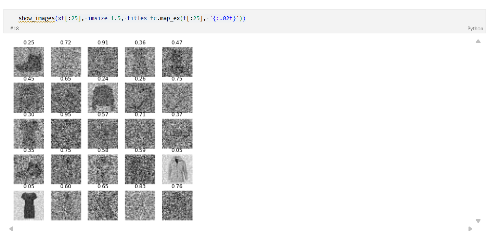
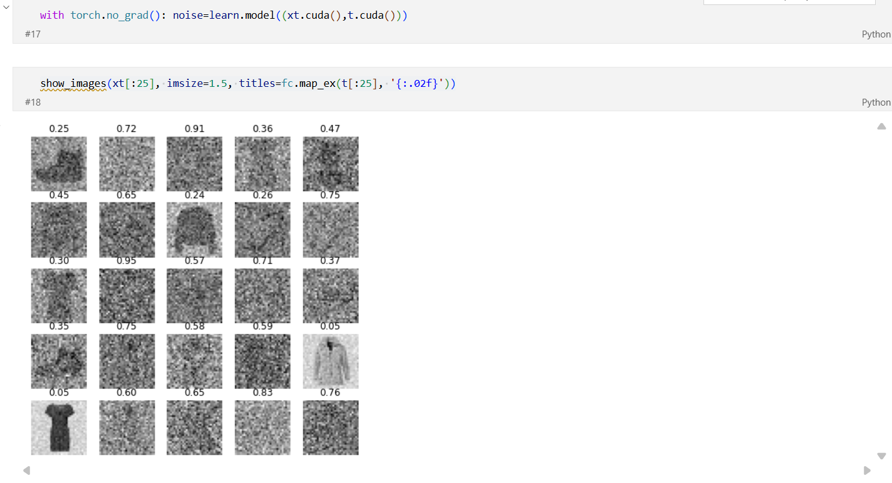

Predicting the Noise Level of Noisy FashionMNIST Images¶
Predict time step given noisy image. Here we are not creating a model that predicts the noise given the noised image and t. Instead we are creating a model that predicts the time step given the noised image.
What This Notebook Is About¶
In this notebook, we tackle an interesting problem in diffusion models: can we predict how much noise is in an image just by looking at it?
What Professor Said¶
When working on 22_cosine.ipynb, the professor had an idea about how much noise each image had as we ran the code show_image and we had the code and images below.

So he thought why are we passing noised image (xt.cuda()) and the amount of noise or t (t.cuda()) given that he could have thought the model could figure out how much noise there is. He was referring to the line before show_image as shown below.

So, Jeremy wanted to check his contention that the nodel could figure out how much noise there is. So, now, he creates a new model that would try and figure out how much noise is.
So, now he created a new noisify function. This noisify grabs an alpha_bar t (al_t) randonly.
Why Does This Matter?¶
In standard diffusion models (like DDPM or DDIM), we add noise to images during training and then train a model to predict that noise. During the denoising (sampling) process, we follow a predetermined schedule that tells us how much noise should be in the image at each step.
But what if we could automatically detect how noisy an image is? This would allow us to:
- Skip unnecessary denoising steps if an image is already fairly clean
- Better handle images with unknown noise levels
- Create more flexible sampling procedures
What We'll Learn¶
- Noise Level Prediction Model: Train a CNN to predict the noise level (alpha-bar value) from a noisy image
- No-Time Diffusion Model: Train a diffusion model that doesn't receive the timestep as input
- Combining Both: Use the noise predictor to guide sampling from the no-time model
- Quality Evaluation: Measure generated image quality using FID and KID scores
Part 1: Imports and Setup¶
Let's start by importing all the libraries we need and setting up our environment.
# ============================================================================
# GPU SELECTION
# ============================================================================
# This line selects which GPU to use (GPU index 1 in this case)
# If you only have one GPU, change this to '0'
# This MUST be set BEFORE importing PyTorch!
import os
os.environ['CUDA_VISIBLE_DEVICES'] = '1' # Use GPU 1. Change to '0' if you have only one GPU
# ============================================================================
# CORE LIBRARY IMPORTS
# ============================================================================
# timm: PyTorch Image Models - provides pretrained models and utilities
# torch: PyTorch - the deep learning framework we use
# random: Python's random number generation
# datasets: Hugging Face datasets library for easy data loading
# math: Python math functions (we use pi, cos, etc.)
# fastcore (fc): Fast AI's utility library
# numpy (np): Numerical computing library
# matplotlib (mpl, plt): Plotting library
import timm, torch, random, datasets, math, fastcore.all as fc, numpy as np, matplotlib as mpl, matplotlib.pyplot as plt
# k_diffusion (K): Katherine Crowson's diffusion library with various samplers
# torchvision.transforms (T): Image transformation utilities
import k_diffusion as K, torchvision.transforms as T
# TF: Functional transforms for images
# F: PyTorch's functional API for neural network operations
import torchvision.transforms.functional as TF, torch.nn.functional as F
# DataLoader: Loads data in batches
# default_collate: Default function to combine samples into batches
from torch.utils.data import DataLoader, default_collate
# Path: Object-oriented filesystem paths
from pathlib import Path
# init: Weight initialization functions
from torch.nn import init
# L: fastcore's enhanced list class with extra features
from fastcore.foundation import L
# nn: Neural network building blocks
# tensor: Creates PyTorch tensors
from torch import nn, tensor
# load_dataset: Function to download/load datasets from Hugging Face
from datasets import load_dataset
# itemgetter: Efficient way to get items from sequences
from operator import itemgetter
# MulticlassAccuracy: Metric for classification accuracy
from torcheval.metrics import MulticlassAccuracy
# partial: Creates a new function with some arguments pre-filled
from functools import partial
# lr_scheduler: Learning rate scheduling utilities
from torch.optim import lr_scheduler
# optim: Optimizers like Adam, SGD, etc.
from torch import optim
# ============================================================================
# MINIAI IMPORTS (Custom library from the course)
# ============================================================================
# These are custom modules built throughout the course
from miniai.datasets import * # Dataset utilities
from miniai.conv import * # Convolution utilities
from miniai.learner import * # Training loop (Learner class)
from miniai.activations import * # Activation functions (GeneralRelu, etc.)
from miniai.init import * # Weight initialization
from miniai.sgd import * # SGD-related utilities
from miniai.resnet import * # ResNet building blocks
from miniai.augment import * # Data augmentation
from miniai.accel import * # Training acceleration (mixed precision, etc.)
from miniai.fid import ImageEval # FID/KID evaluation metrics
# ============================================================================
# DIFFUSION-SPECIFIC IMPORTS
# ============================================================================
# progress_bar: Shows nice progress bars during training/sampling
from fastprogress import progress_bar
# Hugging Face's diffusers library components:
# UNet2DModel: The U-Net architecture commonly used in diffusion models
# DDIMPipeline: DDIM (Denoising Diffusion Implicit Models) pipeline
# DDPMPipeline: DDPM (Denoising Diffusion Probabilistic Models) pipeline
# DDIMScheduler: Noise schedule for DDIM sampling
# DDPMScheduler: Noise schedule for DDPM training/sampling
from diffusers import UNet2DModel, DDIMPipeline, DDPMPipeline, DDIMScheduler, DDPMScheduler
# ============================================================================
# CONFIGURATION AND SETTINGS
# ============================================================================
# Configure how PyTorch prints tensors:
# - precision=4: Show 4 decimal places
# - linewidth=140: Maximum characters per line
# - sci_mode=False: Don't use scientific notation (e.g., 1e-5)
torch.set_printoptions(precision=4, linewidth=140, sci_mode=False)
# Set random seed for reproducibility
# This ensures you get the same random numbers each time you run the notebook
torch.manual_seed(1)
# Set default colormap for images to 'gray_r' (reversed grayscale)
# This makes 0 = white and 1 = black, which is intuitive for FashionMNIST
mpl.rcParams['image.cmap'] = 'gray_r'
# Set figure DPI (dots per inch) for display
# Higher DPI = sharper images but larger size
mpl.rcParams['figure.dpi'] = 70
# Disable warning messages from libraries (keeps output clean)
import logging
logging.disable(logging.WARNING)
# Set random seed again for all random operations (Python, NumPy, PyTorch)
set_seed(42)
# Limit the number of CPU workers for data loading
# This prevents excessive memory usage on machines with many cores
if fc.defaults.cpus > 8:
fc.defaults.cpus = 8
Part 2: Load and Prepare the Dataset¶
We'll use FashionMNIST, which contains 28x28 grayscale images of clothing items.
What is FashionMNIST?¶
FashionMNIST is a dataset of 70,000 grayscale images (60,000 training + 10,000 test) showing 10 different types of clothing:
- T-shirts, Trousers, Pullovers, Dresses, Coats, Sandals, Shirts, Sneakers, Bags, Ankle boots
Each image is 28x28 pixels, making it a good dataset for quick experiments.
# ============================================================================
# DATASET CONFIGURATION
# ============================================================================
# Define the keys used in the dataset dictionary
# xl = 'image' means we access images via dataset['image']
# yl = 'label' means we access labels via dataset['label']
xl, yl = 'image', 'label'
# Name of the dataset to load from Hugging Face
name = "fashion_mnist"
# Batch size: how many images to process at once
# 512 is quite large but works well for these small 28x28 images
# Larger batch sizes can speed up training but require more GPU memory
bs = 512
# Load the dataset from Hugging Face Hub
# This downloads the data (if not cached) and returns a DatasetDict
# containing 'train' and 'test' splits
dsd = load_dataset(name)
# Let's see what we got:
print(f"Dataset structure: {dsd}")
print(f"Training samples: {len(dsd['train'])}")
print(f"Test samples: {len(dsd['test'])}")
Part 3: The Noisification Process¶
Understanding How Diffusion Models Add Noise¶
In diffusion models, we take a clean image $x_0$ and add noise to create a noisy version $x_t$:
$$x_t = \sqrt{\bar{\alpha}_t} \cdot x_0 + \sqrt{1 - \bar{\alpha}_t} \cdot \epsilon$$Where:
- $x_0$ = the original clean image
- $x_t$ = the noisy image at "time" $t$
- $\bar{\alpha}_t$ = amount of original signal remaining (between 0 and 1)
- $\epsilon$ = random Gaussian noise
Think of it like mixing paint:
- $\sqrt{\bar{\alpha}_t}$ determines how much of the original image to keep
- $\sqrt{1 - \bar{\alpha}_t}$ determines how much noise to add
- The squares and square roots ensure the total "energy" stays the same
The Logit Transformation¶
In this notebook, we train a model to predict $\bar{\alpha}_t$ from a noisy image. However, $\bar{\alpha}_t$ is bounded between 0 and 1, which can make neural network training harder.
The logit transformation maps values from (0, 1) to (-$\infty$, +$\infty$):
$$\text{logit}(p) = \log\left(\frac{p}{1-p}\right)$$This makes the target unbounded, which is easier for a neural network to learn. We then apply sigmoid to the prediction to get back to the (0, 1) range.
# ============================================================================
# NOISIFY FUNCTION - Adding Random Noise to Images
# ============================================================================
def noisify(x0):
"""
Add random amounts of noise to a batch of images.
This function simulates what happens during diffusion model training:
we take clean images and add varying amounts of noise to them.
Parameters:
-----------
x0 : torch.Tensor
A batch of clean images with shape (batch_size, channels, height, width)
For FashionMNIST: (512, 1, 32, 32) after padding
Returns:
--------
xt : torch.Tensor
The noisy images, same shape as x0
logit_alpha : torch.Tensor
The logit of alpha_bar for each image, shape (batch_size,)
This is the target our model will predict
"""
# Get the device (CPU or GPU) where input tensor is located
# We need to create new tensors on the same device
device = x0.device
# ========================================================================
# Step 1: Generate random alpha_bar values for each image
# ========================================================================
# torch.rand creates random numbers uniformly distributed in [0, 1)
# Shape: (batch_size, 1, 1, 1)
# The extra dimensions (1, 1, 1) allow broadcasting with images
al_t = torch.rand((len(x0), 1, 1, 1), device=device)
# al_t represents alpha_bar_t: how much of the original signal remains
# al_t close to 1 = mostly signal, little noise
# al_t close to 0 = mostly noise, little signal
# ========================================================================
# Step 2: Generate random Gaussian noise
# ========================================================================
# torch.randn creates random numbers from N(0, 1) (standard normal)
# Same shape as the input images
ε = torch.randn(x0.shape, device=device) # ε is epsilon (noise)
# ========================================================================
# Step 3: Mix the original image with noise
# ========================================================================
# This is the forward diffusion formula:
# xt = sqrt(alpha_bar) * x0 + sqrt(1 - alpha_bar) * epsilon
xt = al_t.sqrt() * x0 + (1 - al_t).sqrt() * ε
# Why square roots? This ensures the variance is preserved:
# Var(xt) = alpha_bar * Var(x0) + (1-alpha_bar) * Var(epsilon) = 1
# (assuming x0 and epsilon both have unit variance)
# ========================================================================
# Step 4: Return noisy image and logit of alpha_bar
# ========================================================================
# .squeeze() removes the extra dimensions: (batch, 1, 1, 1) -> (batch,)
# .logit() applies log(x / (1-x)) transformation
return xt, al_t.squeeze().logit()
# ============================================================================
# Let's understand the logit transformation with an example
# ============================================================================
print("Understanding the logit transformation:")
print("="*50)
# Create some example alpha values
example_alphas = torch.tensor([0.1, 0.25, 0.5, 0.75, 0.9])
example_logits = example_alphas.logit()
print(f"Alpha values: {example_alphas.numpy()}")
print(f"Logit values: {example_logits.numpy()}")
print("\nNotice:")
print("- Alpha 0.5 -> Logit 0 (middle value maps to zero)")
print("- Alpha < 0.5 -> Logit < 0 (more noise = negative)")
print("- Alpha > 0.5 -> Logit > 0 (less noise = positive)")
Interactive: Three prediction targets — ε, x0, and v
A diffusion model can be parameterized to predict the noise ε, the clean image x0, or the "velocity" v = √ā · ε − √(1−ā) · x0. All three are mathematically equivalent — given one you can compute the others — but they differ in training dynamics. Drag the timestep slider to see what each prediction looks like at every noise level.
Why v-prediction is increasingly the default: ε-prediction is degenerate at t = 0 (the noise has zero variance, so all targets are 0); x0-prediction is degenerate at t = 1 (signal is gone). v-prediction interpolates between them and stays well-behaved at both ends — cleaner gradients across the whole schedule.
Noisify: From Cosine Schedule to Direct Uniform Sampling¶
What we did in Notebook 1 (DDPM/DDIM with Cosine Schedule)¶
In the previous notebook, we defined a cosine noise schedule that maps a continuous time $t \in [0, 1]$ to $\bar{\alpha}_t$:
$$ \bar{\alpha}(t) = \cos^2\!\left(\frac{t \cdot \pi}{2}\right) $$def abar(t):
return (t * math.pi / 2).cos() ** 2
The noisify function sampled a random time $t$ uniformly, then used the cosine schedule to compute $\bar{\alpha}_t$:
def noisify(x0):
device = x0.device
n = len(x0)
# Step 1: Sample random continuous time values
t = torch.rand(n,).to(x0).clamp(0, 0.999)
# Step 2: Generate random Gaussian noise
epsilon = torch.randn(x0.shape, device=device)
# Step 3: Compute alphabar via the cosine schedule
abar_t = abar(t).reshape(-1, 1, 1, 1).to(device)
# Step 4: Forward diffusion
xt = abar_t.sqrt() * x0 + (1 - abar_t).sqrt() * epsilon
return (xt, t.to(device)), epsilon
The key properties of this approach:
- Time $t$ is uniform in $[0, 1)$, but $\bar{\alpha}_t$ is not uniform — it follows the shape of $\cos^2$.
- The model predicts noise $\epsilon$, and receives $t$ as a conditioning input.
- During sampling, we step through time sequentially using the same cosine schedule.
What we do differently in Notebook 2 (Direct Uniform Sampling)¶
In this notebook, we skip the cosine schedule entirely and sample $\bar{\alpha}_t$ directly from a uniform distribution:
def noisify(x0):
device = x0.device
# Step 1: Sample alpha_bar DIRECTLY (no schedule function)
al_t = torch.rand((len(x0), 1, 1, 1), device=device)
# Step 2: Generate random Gaussian noise
ε = torch.randn(x0.shape, device=device)
# Step 3: Forward diffusion (same formula as before)
xt = al_t.sqrt() * x0 + (1 - al_t).sqrt() * ε
# Step 4: Return noisy image and logit(alpha_bar) as target
return xt, al_t.squeeze().logit()
What changed and why¶
| Notebook 1 | Notebook 2 | |
|---|---|---|
| What's sampled | $t \sim \text{Uniform}(0, 1)$ | $\bar{\alpha} \sim \text{Uniform}(0, 1)$ |
| How $\bar{\alpha}$ is obtained | $\bar{\alpha} = \cos^2(t \cdot \pi/2)$ | Sampled directly |
| Distribution of $\bar{\alpha}$ | Non-uniform (shaped by cosine) | Uniform |
| Model input | $(x_t,\; t)$ | $(x_t)$ with no explicit time |
| Model predicts | Noise $\epsilon$ | $\text{logit}(\bar{\alpha}_t)$ |
| Return value | $(x_t, t), \epsilon$ | $x_t, \text{logit}(\bar{\alpha}_t)$ |
Why random $\bar{\alpha}$ values work (no smooth schedule needed)¶
A smooth, ordered schedule is only needed during sampling, where we step sequentially from noisy to clean:
$$ t = 0.8 \rightarrow 0.6 \rightarrow 0.4 \rightarrow 0.2 \rightarrow 0.0 $$During training, there is no sequential process. Each image in a batch independently gets a random noise level. The model just needs to see a good variety of noise levels across training — it doesn't matter what order they come in.
Think of it like studying for an exam: during practice (training), you can do problems in any random order — easy, hard, medium, hard, easy. The order doesn't matter; you just need exposure to all difficulty levels. But during the actual exam (sampling), you follow a structured strategy — working step by step.
Both of these produce a valid random $\bar{\alpha}$ for training:
# Notebook 1: random time → cosine schedule → non-uniform alpha_bar
t = torch.rand(n,).clamp(0, 0.999)
abar_t = (t * math.pi / 2).cos() ** 2
# Notebook 2: random alpha_bar directly → uniform
al_t = torch.rand((len(x0), 1, 1, 1))
The forward diffusion formula itself is identical in both:
$$ x_t = \sqrt{\bar{\alpha}_t} \cdot x_0 + \sqrt{1 - \bar{\alpha}_t} \cdot \epsilon, \qquad \epsilon \sim \mathcal{N}(0, I) $$Why the prediction target also changed¶
In Notebook 1, the model predicted noise $\epsilon$ and received time $t$ as input. The training loss was:
$$ \mathcal{L} = \| \epsilon - \epsilon_\theta(x_t, t) \|^2 $$Interactive: Convert between ε, x0, and v at any timestep
Given a noisy image xt and any one of the three quantities, the other two are determined by simple algebra. Drag the slider, watch the conversion formulas evaluate live. This is why fastai's framework can ask the same trained model to predict any of the three — they're all the same information in different coordinates.
1. $\epsilon$ — The Actual Noise (Ground Truth)¶
This is random Gaussian noise we generate ourselves and add to the clean image. It's just samples from a standard normal distribution:
# This is ε — we create it ourselves
epsilon = torch.randn(x0.shape, device=device)
We know exactly what it is because we created it. It's the "answer key."
2. $\epsilon_\theta(x_t, t)$ — The Predicted Noise (Model Output)¶
This is what the neural network outputs when we show it:
- The noisy image $x_t$
- The time step $t$
# This is ε_θ(x_t, t) — the model's guess
predicted_noise = model(x_t, t)
The subscript $\theta$ indicates this comes from a neural network with learnable parameters $\theta$.
In Notebook 2, we no longer pass $t$ to the model. Instead, the model looks at the noisy image $x_t$ and predicts how noisy it is — specifically, $\text{logit}(\bar{\alpha}_t)$:
$$ \text{logit}(\bar{\alpha}) = \log\!\left(\frac{\bar{\alpha}}{1 - \bar{\alpha}}\right) $$This is a natural pairing: uniform $\bar{\alpha}$ values spread evenly across $[0, 1]$ map to logit values spread across $(-\infty, +\infty)$, giving the model a well-distributed regression target.
Sigmoid will treat equal ratios as equally important at both ends of the spectrum -- this was Jeremy's hypothesis that using logit will be better.
| $\bar{\alpha}$ | Meaning | $\text{logit}(\bar{\alpha})$ |
|---|---|---|
| 0.1 | Mostly noise | -2.20 |
| 0.25 | More noise than signal | -1.10 |
| 0.5 | Equal noise and signal | 0.00 |
| 0.75 | More signal than noise | +1.10 |
| 0.9 | Mostly signal | +2.20 |
Summary¶
Notebook 2 simplifies the training pipeline by:
- Removing the cosine schedule — $\bar{\alpha}$ is sampled directly instead of going through $t \rightarrow \cos^2(t \cdot \pi/2) \rightarrow \bar{\alpha}$.
- Removing explicit time conditioning — the model no longer receives $t$ as input.
- Changing the prediction target — from noise $\epsilon$ to $\text{logit}(\bar{\alpha})$, which tells the model to estimate the noise level rather than the noise itself.
The forward diffusion formula remains the same in both notebooks. A schedule is still used during sampling (to define the sequential denoising path), but during training, any method of sampling random noise levels works.
# ============================================================================
# DATA LOADING FUNCTIONS
# ============================================================================
def collate_ddpm(b):
"""
Custom collate function for DDPM training.
A collate function takes a list of individual samples and combines them
into a batch. This is used by PyTorch's DataLoader.
Parameters:
-----------
b : list
A list of samples from the dataset
Returns:
--------
tuple: (noisy_images, logit_alpha_values)
"""
# default_collate(b) combines the list into a dictionary with batched tensors
# Then we extract just the images with [xl] (xl = 'image')
# Finally, noisify adds random noise and returns (noisy_images, targets)
return noisify(default_collate(b)[xl])
def dl_ddpm(ds):
"""
Create a DataLoader for DDPM training.
Parameters:
-----------
ds : Dataset
The dataset to load from
Returns:
--------
DataLoader: Configured for DDPM training
"""
return DataLoader(
ds, # The dataset
batch_size=bs, # 512 images per batch
collate_fn=collate_ddpm, # Our custom function to create noisy batches
num_workers=4 # Use 4 parallel workers to load data faster
)
# ============================================================================
# IMAGE TRANSFORMATION
# ============================================================================
@inplace # This decorator modifies the input in-place instead of returning a copy
def transformi(b):
"""
Transform images for training.
This function:
1. Converts PIL images to PyTorch tensors
2. Pads 28x28 images to 32x32 (adding 2 pixels on each side)
3. Centers the pixel values around 0 (by subtracting 0.5)
Parameters:
-----------
b : dict
A batch dictionary containing 'image' and 'label' keys
"""
# b[xl] = list of images (xl = 'image')
# For each image 'o' in the list:
b[xl] = [
F.pad( # Add padding around the image
TF.to_tensor(o), # Convert PIL Image -> tensor (0 to 1 range)
(2, 2, 2, 2) # Padding: (left, right, top, bottom)
) - 0.5 # Subtract 0.5 to center values around 0
for o in b[xl] # Loop over all images in the batch
]
# Original: 28x28 with values in [0, 1]
# After: 32x32 with values in [-0.5, 0.5]
# ============================================================================
# CREATE DATA LOADERS
# ============================================================================
# Apply the transformation to the dataset
# with_transform applies transformi lazily (on-the-fly when data is accessed)
tds = dsd.with_transform(transformi)
# Create DataLoaders for training and testing
# DataLoaders is a container that holds train and test/valid dataloaders
dls = DataLoaders(
dl_ddpm(tds['train']), # Training dataloader
dl_ddpm(tds['test']) # Test dataloader (used as validation)
)
print(f"Training batches: {len(dls.train)}")
print(f"Test batches: {len(dls.valid)}")
# ============================================================================
# VISUALIZE THE DATA
# ============================================================================
# Get one batch from the training dataloader
dl = dls.train
xt, amt = next(iter(dl)) # xt = noisy images, amt = logit(alpha_bar) values
print(f"Noisy images shape: {xt.shape}") # Should be (512, 1, 32, 32)
print(f"Target shape: {amt.shape}") # Should be (512,)
print(f"\nTarget (logit alpha) range: [{amt.min():.2f}, {amt.max():.2f}]")
# ============================================================================
# DISPLAY NOISY IMAGES WITH THEIR NOISE LEVELS
# ============================================================================
# Create titles showing the alpha values (not logit - we apply sigmoid to convert back)
# amt contains logit values, so amt.sigmoid() gives us the alpha values
titles = [f'{o:.2f}' for o in amt[:16]] # Format as 2 decimal places
# Display the first 16 noisy images
# The title above each image shows its logit(alpha) value
show_images(xt[:16], imsize=1.7, titles=titles)
print("\nThe numbers above each image show the logit(alpha) value:")
print("- More negative = more noise (less of original image)")
print("- More positive = less noise (more of original image)")
print("- Around 0 = about 50% signal, 50% noise")
Part 4: Baseline Model - Predicting a Constant¶
Before training a real model, let's establish a baseline. What's the simplest possible prediction we could make?
Always predict the middle value! Since logit(0.5) = 0, predicting 0 would mean "50% noise, 50% signal". But wait - our logit targets are not centered at 0 because we sample alpha uniformly from (0, 1), and logit of uniform(0,1) is not centered at 0.
Let's see what happens if we just predict 0.5 for everything.
# ============================================================================
# DUMMY BASELINE MODEL
# ============================================================================
class f(nn.Module):
"""
A dummy model that always predicts 0.5, regardless of input.
This gives us a baseline to compare against. If our real model
can't beat this, something is wrong!
"""
def __init__(self):
super().__init__()
# We need at least one parameter so PyTorch considers this a valid model
# This linear layer is never actually used in forward()
self.blah = nn.Linear(1, 1)
def forward(self, x):
# Always return 0.5 for every image in the batch
# torch.full creates a tensor filled with a specific value
# len(x) is the batch size
return torch.full((len(x),), 0.5) # Shape: (batch_size,)
print("Created baseline model that always predicts 0.5")
# ============================================================================
# EVALUATE THE BASELINE
# ============================================================================
# Create a callback to track metrics
metrics = MetricsCB()
# Learning rate (not actually used since we're not training)
lr = 1e-2
# Create a learner with our dummy model
# F.mse_loss = Mean Squared Error loss function
learn = TrainLearner(
f(), # Our dummy model
dls, # Data loaders
F.mse_loss, # Loss function: MSE between prediction and target
lr=lr, # Learning rate
cbs=metrics # Callbacks to track metrics
)
# Run one epoch of evaluation only (train=False means no gradient updates)
learn.fit(1, train=False)
print("\nThis loss (~3.5) is our baseline. Our real model should do much better!")
# ============================================================================
# VERIFY THE BASELINE LOSS MANUALLY
# ============================================================================
# Let's compute the MSE loss manually to verify
# amt contains the actual logit(alpha) values from our batch
# We're predicting 0.5 for all of them
manual_loss = F.mse_loss(amt, torch.full(amt.shape, 0.5))
# Here amt is the predicted logit(alpha) values from our model for
# one mini-batch
# We are predicting 0.5 for all of them and comparing our mini-batch
# with the predicted values of 0.5
print(f"Manual MSE loss (predicting 0.5): {manual_loss:.4f}")
# The loss is high because logit values range from very negative to very positive
# Predicting 0.5 (instead of the actual logit values) results in large errors
Suppose, we get something around 3.7 for this MSE loss. SO, if we get something around 3, then basically we haven't done anything better than random.
# ============================================================================
# CUSTOM LOSS FUNCTION
# ============================================================================
# When we are trying to use MSE and our inputs and targets have different
# shapes, Pytorch will probably broadcast and will not give the
# expected result. So, we need to flatten both the inputs and targets
# before computing the MSE loss.
def flat_mse(x, y):
"""
Compute MSE loss after flattening both tensors.
This ensures the loss works correctly regardless of tensor shape.
Sometimes model outputs might have extra dimensions that need to be
flattened before computing the loss.
Parameters:
-----------
x : torch.Tensor
Predictions from the model
y : torch.Tensor
Ground truth targets
Returns:
--------
torch.Tensor: Scalar MSE loss value
"""
# .flatten() converts any shape to a 1D tensor
# This ensures we compare element-by-element regardless of original shape
return F.mse_loss(x.flatten(), y.flatten())
# Test it
print(f"flat_mse result: {flat_mse(amt, torch.full(amt.shape, 0.5)):.4f}")
Part 5: Building the Noise Prediction Model¶
Now let's build a real model that can look at a noisy image and predict how much noise is in it.
Architecture Overview¶
We'll use a ResNet-style convolutional neural network:
- Input: 32x32 grayscale image (1 channel)
- Initial ResBlock: Expands to 16 channels
- 5 more ResBlocks: Each doubles the channels and halves the spatial size
- 16 -> 32 -> 64 -> 128 -> 256 -> 512 channels
- 32 -> 16 -> 8 -> 4 -> 2 -> 1 spatial size
- Flatten + Dropout + Linear: Output a single number (the predicted logit)
What is a ResBlock?¶
A ResBlock (Residual Block) is a building block that:
- Applies convolutions and activation functions
- Adds the input back to the output (skip connection)
This helps with training deep networks by allowing gradients to flow directly through the skip connections.
Previously Defined Functions¶
# =====================================================
# HELPER FUNCTION: CREATE CONV LAYER WITH ReLU
# =====================================================
def conv(ni, nf, ks=3, stride=2, act=True):
"""
Create a convolution layer with optional ReLU activation.
Arguments:
ni - Number of input channels
nf - Number of output channels (filters)
ks - Kernel size (default 3 for 3x3)
stride - Stride (default 2 to halve spatial size)
act - Whether to add ReLU activation (default True)
Returns:
A Conv2d layer, optionally wrapped with ReLU in a Sequential
Notes:
- padding=ks//2 ensures output size = input size / stride
- For ks=3, padding=1
- With stride=2, each layer halves the spatial dimensions
"""
# Create the convolution layer
res = nn.Conv2d(ni, nf, stride=stride, kernel_size=ks, padding=ks//2)
# Optionally wrap with ReLU
if act:
res = nn.Sequential(res, nn.ReLU())
return res
# =====================================================
# HELPER FUNCTION: CREATE CONV BLOCK WITH ReLU
# =====================================================
# This was defined in the notebook 13_resnet_explained.ipynb
def _conv_block(ni, nf, stride, act=act_gr, norm=None, ks=3):
"""
Create the convolutional part of a ResBlock.
This is the "main path" that learns the residual function F(x).
Structure:
Conv(ni → nf, stride=1) → [Norm] → Act
Conv(nf → nf, stride=stride) → [Norm] (no activation - added after skip)
Args:
ni: Number of input channels
nf: Number of output channels
stride: Stride for the second conv (1 = same size, 2 = halve size)
act: Activation function class
norm: Normalization layer class (e.g., nn.BatchNorm2d)
ks: Kernel size (default: 3)
Returns:
nn.Sequential with two conv layers
"""
return nn.Sequential(
# First conv: change channels (ni → nf), keep spatial size
conv(ni, nf, stride=1, act=act, norm=norm, ks=ks),
# Second conv: keep channels (nf → nf), may change spatial size
# NOTE: No activation here! Activation comes after the skip connection
conv(nf, nf, stride=stride, act=None, norm=norm, ks=ks)
)
What Does _conv_block Do?¶
Overview¶
_conv_block builds the main path (also called the "residual path") of a ResNet-style residual block. This is the part that learns the residual function F(x) — the "correction" that gets added to the skip connection.
It stacks two convolution layers inside an nn.Sequential:
def _conv_block(ni, nf, stride, act=act_gr, norm=None, ks=3):
return nn.Sequential(
conv(ni, nf, stride=1, act=act, norm=norm, ks=ks), # Conv 1
conv(nf, nf, stride=stride, act=None, norm=norm, ks=ks) # Conv 2
)
The Two Convolutions Have Different Jobs¶
Conv 1: conv(ni, nf, stride=1, act=act, ...)¶
| Property | Value |
|---|---|
| Channels | ni → nf (changes depth) |
| Spatial size | Unchanged (stride=1) |
| Activation | ✅ Yes (ReLU) — adds non-linearity |
Job: Transform the channel dimension while keeping the spatial resolution intact.
Conv 2: conv(nf, nf, stride=stride, act=None, ...)¶
| Property | Value |
|---|---|
| Channels | nf → nf (unchanged) |
| Spatial size | Halved if stride=2, unchanged if stride=1 |
| Activation | ❌ No — intentionally omitted |
Job: Optionally downsample the spatial dimensions. No activation here because in a ResBlock, activation is applied after adding the skip connection:
ReLU(F(x) + x).
Data Flow Diagram¶
Input (ni channels, H × W)
│
▼
┌─────────────────────────────────────┐
│ Conv1: ni → nf, stride=1 │ ← Change channel depth
│ [Norm] → ReLU │ ← Non-linearity between convs
├─────────────────────────────────────┤
│ Conv2: nf → nf, stride=s │ ← Optionally downsample spatially
│ [Norm] │ ← NO activation here
└─────────────────────────────────────┘
│
▼
Output (nf channels, H/s × W/s)
↘
(+) skip connection → then ReLU is applied
Why Two Convolutions Instead of One?¶
1. More Representational Power¶
A single convolution can only learn a linear transformation followed by one non-linearity. Two convolutions with a ReLU sandwiched between them can learn more complex, non-linear residual functions F(x).
2. Separation of Responsibilities¶
Each conv handles a different geometric transformation:
- Conv 1 handles the channel (depth) change:
ni → nf - Conv 2 handles the spatial downsampling:
H×W → H/s × W/s
Separating these into two steps gives the network more flexibility than forcing a single layer to do both at once.
3. Standard ResNet Design Pattern¶
This two-conv structure is the canonical ResNet "basic block" from the original He et al. 2015 paper. The key insight is:
The block learns the residual F(x) = desired_output − x, and then the full ResBlock computes F(x) + x. Two convs make F(x) expressive enough to learn useful corrections.
Why No Activation on the Second Conv?¶
This is a deliberate design choice from the ResNet architecture. The full residual block does:
output = activation(F(x) + skip(x))
If we put ReLU inside F(x) at the end, the addition F(x) + skip(x) would happen after a ReLU, which would clip negative values before the skip connection has a chance to "rescue" them. By omitting the activation on Conv 2, we allow the full range of F(x) to combine with the skip before applying the non-linearity.
Concrete Example¶
Say we have an input with 32 channels at 16×16 spatial resolution, and we want to go to 64 channels at 8×8:
Input: (batch, 32, 16, 16)
│
▼
Conv1(32 → 64, stride=1) → (batch, 64, 16, 16) # channels changed
│
▼
ReLU
│
▼
Conv2(64 → 64, stride=2) → (batch, 64, 8, 8) # spatially downsampled
│
▼
Output: (batch, 64, 8, 8) # ready to be added to skip connection
# =====================================================
# RESIDUAL BLOCK
# =====================================================
# This was defined in the notebook 13_resnet_explained.ipynb
class ResBlock(nn.Module):
"""
Residual Block - the building block of ResNets.
Implements: output = activation(F(x) + shortcut(x))
Where:
- F(x) is the conv block (learns the residual)
- shortcut(x) is identity or a projection (1x1 conv + pool)
Args:
ni: Number of input channels
nf: Number of output channels
stride: Stride (1 = same size, 2 = halve spatial dimensions)
ks: Kernel size (default: 3)
act: Activation function class
norm: Normalization layer class
"""
def __init__(self, ni, nf, stride=1, ks=3, act=act_gr, norm=None):
super().__init__()
# Main convolutional path (learns residual F(x))
self.convs = _conv_block(ni, nf, stride, act=act, ks=ks, norm=norm)
# Identity/projection shortcut
# If channels change (ni != nf): use 1x1 conv to match channels
# If channels same: use identity (fc.noop = lambda x: x)
self.idconv = fc.noop if ni == nf else conv(ni, nf, ks=1, stride=1, act=None)
# Pooling for spatial dimension change
# If stride > 1: use average pooling to reduce spatial size
# If stride == 1: no pooling needed (fc.noop)
# ceil_mode=True ensures output size matches conv output
self.pool = fc.noop if stride == 1 else nn.AvgPool2d(2, ceil_mode=True)
# Final activation (applied after adding skip connection)
self.act = act()
def forward(self, x):
"""
Forward pass:
1. Compute conv path: convs(x)
2. Compute shortcut: idconv(pool(x))
3. Add them together
4. Apply activation
Returns: act(convs(x) + idconv(pool(x)))
"""
# Main path: conv blocks
conv_out = self.convs(x)
# Shortcut path: pool (if needed) then 1x1 conv (if needed)
shortcut = self.idconv(self.pool(x))
# Add and activate
return self.act(conv_out + shortcut)
What Does ResBlock Do?¶
Overview¶
ResBlock (Residual Block) is the fundamental building block of ResNets. It implements the core idea that made deep networks actually trainable: instead of learning a direct mapping, the network learns a residual correction that gets added to the original input via a skip (shortcut) connection.
The formula it computes:
output = activation( F(x) + shortcut(x) )
Where:
- F(x) = the convolutional path (
_conv_block) that learns the residual - shortcut(x) = a path that passes the input through with minimal transformation
- activation = ReLU applied after adding both paths together
class ResBlock(nn.Module):
def __init__(self, ni, nf, stride=1, ks=3, act=act_gr, norm=None):
super().__init__()
self.convs = _conv_block(ni, nf, stride, act=act, ks=ks, norm=norm)
self.idconv = fc.noop if ni == nf else conv(ni, nf, ks=1, stride=1, act=None)
self.pool = fc.noop if stride == 1 else nn.AvgPool2d(2, ceil_mode=True)
self.act = act()
def forward(self, x):
return self.act(self.convs(x) + self.idconv(self.pool(x)))
The Two Parallel Paths¶
Every ResBlock has two paths running simultaneously from input to the addition point. Let's look at each.
Path 1: The Convolutional (Main) Path — self.convs¶
self.convs = _conv_block(ni, nf, stride, act=act, ks=ks, norm=norm)
This is the _conv_block we already know — two stacked convolutions that learn the residual function F(x):
x → Conv1(ni→nf, stride=1) → ReLU → Conv2(nf→nf, stride=s) → F(x)
This path does the heavy lifting — it learns what "correction" needs to be applied to the input.
Path 2: The Shortcut (Skip) Path — self.idconv + self.pool¶
The shortcut path carries the original input x forward so it can be added to the conv path output. But there's a catch: for the addition F(x) + shortcut(x) to work, both tensors must have the exact same shape (same channels, same height, same width).
This creates two possible scenarios, and the shortcut path handles both:
Scenario A: Channels stay the same AND no spatial downsampling (ni == nf and stride == 1)¶
self.idconv = fc.noop # fc.noop = lambda x: x (do nothing)
self.pool = fc.noop # do nothing
The input x already has the right shape — just pass it through unchanged. This is the pure identity shortcut.
x → (do nothing) → x
Scenario B: Channels change OR spatial downsampling happens¶
The shortcut must transform x to match the conv path output. Two things might need to change:
If channels change (ni != nf):
self.idconv = conv(ni, nf, ks=1, stride=1, act=None)
A 1×1 convolution is used to project the input from ni channels to nf channels. Why 1×1?
- It changes the channel dimension without affecting spatial dimensions
- It has minimal parameters (just
ni × nfweights per spatial position) - No activation (
act=None) — we want a clean linear projection, not a transformed version
If spatial dimensions change (stride > 1):
self.pool = nn.AvgPool2d(2, ceil_mode=True)
Average pooling with kernel size 2 is used to halve the spatial dimensions, matching the downsampling done by Conv2 in the main path. ceil_mode=True ensures the output size matches exactly even when input dimensions are odd.
Why average pooling instead of a strided convolution? Average pooling is parameter-free and preserves the average content of the feature map. Using a strided convolution would add learnable parameters to the shortcut, which goes against the ResNet philosophy of keeping the shortcut as simple as possible.
The Final Activation — self.act¶
self.act = act() # typically ReLU
Applied after the addition of both paths. This is exactly why _conv_block's Conv2 has no activation — the ReLU is intentionally placed here, after the skip connection addition.
The Forward Pass: Step by Step¶
def forward(self, x):
return self.act(self.convs(x) + self.idconv(self.pool(x)))
Let's trace through this line carefully:
Input: x
│
├─────── Main Path ──────────────── Shortcut Path ──────────┐
│ │
▼ ▼
self.convs(x) self.pool(x)
│ │
│ Conv1(ni→nf, stride=1) → ReLU │ AvgPool2d (if stride>1)
│ Conv2(nf→nf, stride=s) → (no act) │ or noop (if stride==1)
│ │
│ ▼
│ self.idconv(...)
│ │
│ │ 1×1 Conv (if ni≠nf)
│ │ or noop (if ni==nf)
│ │
▼ ▼
conv_out shortcut
│ │
└──────────────────── ADD ───────────────────────────────────┘
│
▼
self.act(...) ← ReLU applied HERE
│
▼
Output
Note the order in the shortcut path: pooling happens first, then the 1×1 conv. This is because pooling reduces the spatial size (making the tensor smaller), and then the 1×1 conv only needs to operate on the smaller tensor — more computationally efficient.
The Four Possible Configurations¶
Depending on the values of ni, nf, and stride, the ResBlock takes one of four shapes:
Config 1: Same channels, same size (ni == nf, stride == 1)¶
The simplest case — a pure identity skip.
| Component | Value |
|---|---|
self.idconv |
fc.noop (do nothing) |
self.pool |
fc.noop (do nothing) |
x ─────────────────────────────────── x (identity)
│ │
▼ │
_conv_block(x) ───────── ADD ──────────┘ → ReLU → output
Example: Input (batch, 64, 16, 16) → Output (batch, 64, 16, 16)
Config 2: Different channels, same size (ni != nf, stride == 1)¶
Need to match channels but not spatial size.
| Component | Value |
|---|---|
self.idconv |
conv(ni, nf, ks=1, stride=1, act=None) |
self.pool |
fc.noop (do nothing) |
x ──────────────────── 1×1 Conv(ni→nf) ── shortcut
│ │
▼ │
_conv_block(x) ──────────── ADD ───────────────┘ → ReLU → output
Example: Input (batch, 32, 16, 16) → Output (batch, 64, 16, 16)
Config 3: Same channels, smaller size (ni == nf, stride == 2)¶
Need to match spatial size but not channels.
| Component | Value |
|---|---|
self.idconv |
fc.noop (do nothing) |
self.pool |
nn.AvgPool2d(2, ceil_mode=True) |
x ──────────────────── AvgPool2d ──── shortcut
│ │
▼ │
_conv_block(x) ────────── ADD ────────────┘ → ReLU → output
Example: Input (batch, 64, 16, 16) → Output (batch, 64, 8, 8)
Config 4: Different channels AND smaller size (ni != nf, stride == 2)¶
The most complex case — need to match both channels and spatial size.
| Component | Value |
|---|---|
self.idconv |
conv(ni, nf, ks=1, stride=1, act=None) |
self.pool |
nn.AvgPool2d(2, ceil_mode=True) |
x ────────── AvgPool2d ── 1×1 Conv(ni→nf) ── shortcut
│ │
▼ │
_conv_block(x) ─────────────── ADD ───────────────┘ → ReLU → output
Example: Input (batch, 32, 16, 16) → Output (batch, 64, 8, 8)
Concrete Numerical Walkthrough¶
Let's trace a complete forward pass through Config 4 (the most complex case):
Input: x with shape (1, 32, 16, 16)
ni=32, nf=64, stride=2
Main Path (self.convs):¶
x: (1, 32, 16, 16)
│
▼ Conv1(32→64, stride=1)
(1, 64, 16, 16)
│
▼ ReLU
(1, 64, 16, 16)
│
▼ Conv2(64→64, stride=2)
(1, 64, 8, 8) ← conv_out
Shortcut Path (self.idconv(self.pool(x))):¶
x: (1, 32, 16, 16)
│
▼ AvgPool2d(2) ← pool first (reduces spatial size)
(1, 32, 8, 8)
│
▼ 1×1 Conv(32→64) ← then project channels
(1, 64, 8, 8) ← shortcut
Addition + Activation:¶
conv_out: (1, 64, 8, 8)
shortcut: (1, 64, 8, 8) ← shapes match! ✅
─────────────
+ ADD: (1, 64, 8, 8)
│
▼ ReLU
Output: (1, 64, 8, 8)
Why Does This Work? The Residual Learning Insight¶
The genius of the ResBlock is that the network doesn't need to learn the desired output directly. Instead:
desired_output = F(x) + x
So F(x) only needs to learn the difference (residual) between the desired output and the input. If the ideal transformation is close to identity (which is common in deep networks), then F(x) just needs to learn something close to zero — which is much easier than learning the full transformation from scratch.
This is why ResNets can be hundreds of layers deep while plain networks degrade in performance past ~20 layers. The skip connections provide a gradient highway that lets gradients flow backward through the network without vanishing, and the residual learning makes each block's job easier.
Summary Table¶
| Component | What It Does | When Active |
|---|---|---|
self.convs |
Learns the residual F(x) via two conv layers | Always |
self.idconv |
1×1 conv to match channel dimensions | Only when ni != nf |
self.pool |
AvgPool2d to match spatial dimensions | Only when stride > 1 |
self.act |
ReLU after addition of both paths | Always |
The entire block can be summarized in one line:
output = ReLU( _conv_block(x) + 1x1_conv(avgpool(x)) )
# ============================================================================
# MODEL ARCHITECTURE
# ============================================================================
def get_model(act=nn.ReLU, nfs=(16, 32, 64, 128, 256, 512), norm=nn.BatchNorm2d):
"""
Create a ResNet-style CNN for noise level prediction.
Parameters:
-----------
act : nn.Module
Activation function class to use (default: ReLU)
We'll use GeneralRelu which is a leaky ReLU variant
nfs : tuple of int
Number of filters (channels) at each stage
(16, 32, 64, 128, 256, 512) means:
- First layer: 16 channels
- Second layer: 32 channels
- ... and so on
norm : nn.Module
Normalization layer class (default: BatchNorm2d)
BatchNorm normalizes activations within each mini-batch
Returns:
--------
nn.Sequential: The complete model
"""
layers = []
# ========================================================================
# First layer: Initial ResBlock
# ========================================================================
# Input: 1 channel (grayscale), Output: 16 channels
# ks=5: Kernel size 5x5 (larger receptive field for first layer)
# stride=1: No downsampling (keep 32x32 spatial size)
layers.append(
ResBlock(
1, # Input channels (grayscale = 1)
16, # Output channels
ks=5, # 5x5 convolution kernel
stride=1, # Don't reduce spatial size
act=act, # Activation function
norm=norm # Normalization
)
)
# After this: shape is (batch, 16, 32, 32)
# ========================================================================
# Subsequent layers: ResBlocks that downsample
# ========================================================================
# Each block doubles channels and halves spatial dimensions
for i in range(len(nfs) - 1):
layers.append(
ResBlock(
nfs[i], # Input channels from previous layer
nfs[i+1], # Output channels (2x input)
act=act, # Activation function
norm=norm, # Normalization
stride=2 # Stride 2 halves spatial dimensions
)
)
# After all ResBlocks:
# 16->32: (batch, 32, 16, 16)
# 32->64: (batch, 64, 8, 8)
# 64->128: (batch, 128, 4, 4)
# 128->256: (batch, 256, 2, 2)
# 256->512: (batch, 512, 1, 1)
# ========================================================================
# Final layers: Convert to single output value
# ========================================================================
layers.extend([
nn.Flatten(), # (batch, 512, 1, 1) -> (batch, 512)
nn.Dropout(0.2), # Randomly zero 20% of values (regularization)
nn.Linear(nfs[-1], 1, bias=False) # 512 -> 1 (the predicted logit)
])
# bias=False: No bias term in the final linear layer
# This is a design choice; the model learns to predict around 0
return nn.Sequential(*layers)
# Let's look at the model architecture
test_model = get_model()
print("Model Architecture:")
print(test_model)
The same code above can be written as:
def get_model(act=nn.ReLU, nfs=(16,32,64,128,256,512), norm=nn.BatchNorm2d):
layers = [ResBlock(1, 16, ks=5, stride=1, act=act, norm=norm)]
layers += [ResBlock(nfs[i], nfs[i+1], act=act, norm=norm, stride=2) for i in range(len(nfs)-1)]
layers += [nn.Flatten(), nn.Dropout(0.2), nn.Linear(nfs[-1], 1, bias=False)]
return nn.Sequential(*layers)
get_model: Architecture, Training Pipeline, and Noise Prediction¶
Overview¶
get_model assembles a complete ResNet-style CNN designed to take a noisy image as input and predict a single scalar value — the noise level (logit). It does this by stacking multiple ResBlocks that progressively shrink the spatial dimensions while growing the channel depth, and then collapsing everything down to a single number.
def get_model(act=nn.ReLU, nfs=(16, 32, 64, 128, 256, 512), norm=nn.BatchNorm2d):
layers = []
layers.append(ResBlock(1, 16, ks=5, stride=1, act=act, norm=norm))
for i in range(len(nfs) - 1):
layers.append(ResBlock(nfs[i], nfs[i+1], act=act, norm=norm, stride=2))
layers.extend([
nn.Flatten(),
nn.Dropout(0.2),
nn.Linear(nfs[-1], 1, bias=False)
])
return nn.Sequential(*layers)
The model has three stages: an initial ResBlock, a series of downsampling ResBlocks, and a final head that produces the output.
Part A: The Architecture — What get_model Builds¶
The Three Parameters¶
| Parameter | Default | Purpose |
|---|---|---|
act |
nn.ReLU |
Activation function class used in every ResBlock |
nfs |
(16, 32, 64, 128, 256, 512) |
Number of filters (channels) at each stage |
norm |
nn.BatchNorm2d |
Normalization layer class used in every ResBlock |
The nfs tuple is the architectural blueprint — it dictates how many ResBlocks are created and how wide (in channels) each one is.
Stage 1: The Initial ResBlock¶
layers.append(
ResBlock(1, 16, ks=5, stride=1, act=act, norm=norm)
)
| Property | Value |
|---|---|
| Input channels | 1 (grayscale image) |
| Output channels | 16 (first element of nfs) |
| Kernel size | 5×5 (larger than default 3×3) |
| Stride | 1 (no spatial downsampling) |
Why is this layer special?¶
Larger kernel (5×5 instead of 3×3): The first layer operates on raw pixel values. A 5×5 kernel gives a larger receptive field right from the start, allowing the network to capture slightly broader patterns (edges, textures) in its very first look at the image. Later layers use the default 3×3 because they operate on already-processed feature maps where local patterns are sufficient.
No downsampling (stride=1): The input images are already small (32×32 for Fashion-MNIST/MNIST). Downsampling immediately would lose too much spatial information before the network has had a chance to extract any features. So the first block preserves spatial resolution.
Input: (batch, 1, 32, 32) ← grayscale image
Output: (batch, 16, 32, 32) ← 16 feature maps, same spatial size
Stage 2: The Downsampling ResBlocks (Loop)¶
for i in range(len(nfs) - 1):
layers.append(
ResBlock(nfs[i], nfs[i+1], act=act, norm=norm, stride=2)
)
This loop creates 5 ResBlocks (one for each consecutive pair in nfs). Each block doubles the channels and halves the spatial dimensions (stride=2).
The Progression: Trading Space for Depth¶
Channels Spatial Total Features
──────── ─────── ──────────────
Input: 1 32×32 1 × 1024 = 1,024
Block 0: 16 32×32 16 × 1024 = 16,384
Block 1: 32 16×16 32 × 256 = 8,192
Block 2: 64 8×8 64 × 64 = 4,096
Block 3: 128 4×4 128 × 16 = 2,048
Block 4: 256 2×2 256 × 4 = 1,024
Block 5: 512 1×1 512 × 1 = 512
Notice the pattern: spatial dimensions shrink (32→16→8→4→2→1) while channels grow (16→32→64→128→256→512). This is the classic CNN design philosophy — early layers capture many spatial locations with few features, while later layers capture few spatial locations with rich, abstract features.
By the end of the loop, the entire image has been compressed into a 512-dimensional vector at a single spatial location (1×1).
Detailed Trace Through Each Block¶
Block 1: ResBlock(16, 32, stride=2)
(batch, 16, 32, 32) → (batch, 32, 16, 16) ← 32×32 halved to 16×16
Block 2: ResBlock(32, 64, stride=2)
(batch, 32, 16, 16) → (batch, 64, 8, 8) ← 16×16 halved to 8×8
Block 3: ResBlock(64, 128, stride=2)
(batch, 64, 8, 8) → (batch, 128, 4, 4) ← 8×8 halved to 4×4
Block 4: ResBlock(128, 256, stride=2)
(batch, 128, 4, 4) → (batch, 256, 2, 2) ← 4×4 halved to 2×2
Block 5: ResBlock(256, 512, stride=2)
(batch, 256, 2, 2) → (batch, 512, 1, 1) ← 2×2 halved to 1×1
Stage 3: The Output Head¶
After all the ResBlocks, the spatial dimensions have been reduced to 1×1. Now we need to convert this into a single prediction value. Three layers do this:
3a. nn.Flatten()¶
nn.Flatten()
Collapses all dimensions after the batch dimension into a single flat vector.
(batch, 512, 1, 1) → (batch, 512)
The 512 channels at the single 1×1 spatial position become a 512-element vector. This is necessary because nn.Linear expects a 1D input (per sample), not a 3D feature map.
3b. nn.Dropout(0.2)¶
nn.Dropout(0.2)
During training, randomly sets 20% of the 512 values to zero on each forward pass.
[0.5, -0.3, 0.8, 0.1, -0.6, ...]
│
▼ Dropout(0.2) during training
[0.5, 0.0, 0.8, 0.1, 0.0, ...] ← ~20% zeroed out randomly
Why? Dropout is a regularization technique that prevents the model from relying too heavily on any single feature. By randomly "dropping" connections during training, it forces the network to develop redundant representations, which improves generalization to unseen data.
During inference (evaluation), Dropout is automatically disabled — all 512 values pass through unchanged.
3c. nn.Linear(512, 1, bias=False)¶
nn.Linear(nfs[-1], 1, bias=False) # nfs[-1] = 512
A single fully-connected layer that maps the 512-dimensional feature vector to one output number — the predicted noise level logit.
(batch, 512) → (batch, 1)
Mathematically, this is a dot product:
output = w₁·x₁ + w₂·x₂ + ... + w₅₁₂·x₅₁₂
Why bias=False? No bias term is added. This is a design choice — the model is trained to predict noise levels that are centered around 0 (logits), so a bias term is unnecessary and could interfere with this centering.
Full Architecture Diagram¶
Input: Noisy grayscale image (batch, 1, 32, 32)
│
▼
┌─────────────────────────────────────────────────┐
│ STAGE 1: Initial ResBlock │
│ ResBlock(1→16, ks=5, stride=1) │
│ (batch, 1, 32, 32) → (batch, 16, 32, 32) │
│ Purpose: Extract initial features, no downsamp │
└─────────────────────────────────────────────────┘
│
▼
┌─────────────────────────────────────────────────┐
│ STAGE 2: Downsampling ResBlocks │
│ │
│ ResBlock(16→32, stride=2) → (batch, 32, 16, 16) │
│ ResBlock(32→64, stride=2) → (batch, 64, 8, 8) │
│ ResBlock(64→128, stride=2) → (batch, 128, 4, 4) │
│ ResBlock(128→256, stride=2) → (batch, 256, 2, 2) │
│ ResBlock(256→512, stride=2) → (batch, 512, 1, 1) │
│ │
│ Each block: 2× channels, ½ spatial dims │
└─────────────────────────────────────────────────┘
│
▼
┌─────────────────────────────────────────────────┐
│ STAGE 3: Output Head │
│ │
│ Flatten: (batch, 512, 1, 1) → (batch, 512) │
│ Dropout: 20% of values zeroed (training only) │
│ Linear: (batch, 512) → (batch, 1) │
└─────────────────────────────────────────────────┘
│
▼
Output: Predicted noise level logit (batch, 1)
How nfs Controls the Architecture¶
The nfs tuple is the single most important parameter. Changing it changes the entire shape of the network:
nfs |
# ResBlocks | Final channels | Network depth |
|---|---|---|---|
(16, 32, 64, 128, 256, 512) |
6 (1 initial + 5 loop) | 512 | Deep, standard |
(16, 32, 64, 128) |
4 (1 initial + 3 loop) | 128 | Shallower, lighter |
(32, 64, 128, 256, 512, 1024) |
6 (1 initial + 5 loop) | 1024 | Wider, heavier |
The first element of nfs (16) determines the output of the initial ResBlock. Each subsequent element adds another downsampling ResBlock. The last element determines the input size to the final nn.Linear layer.
Important constraint: With 32×32 input images, the maximum useful number of stride=2 blocks is 5 (since 32 / 2⁵ = 1). Adding more would require the spatial dimensions to go below 1×1, which isn't possible.
Why nn.Sequential?¶
return nn.Sequential(*layers)
The entire model is wrapped in nn.Sequential, which means the forward pass is simply: pipe the input through each layer in order, feeding each layer's output as the next layer's input. No custom forward() method needed — the data flows straight through from image to prediction.
Architecture Summary¶
| Stage | Layers | Shape Transformation | Purpose |
|---|---|---|---|
| 1. Initial | 1 ResBlock (5×5, stride=1) | (1, 32, 32) → (16, 32, 32) |
Extract initial features at full resolution |
| 2. Downsample | 5 ResBlocks (3×3, stride=2) | (16, 32, 32) → (512, 1, 1) |
Progressively compress spatial info into channels |
| 3. Head | Flatten + Dropout + Linear | (512, 1, 1) → (1,) |
Collapse to a single noise-level prediction |
The model transforms a 32×32 grayscale image into a single number through a funnel of ResBlocks that trade spatial resolution for feature richness, finishing with a linear projection to produce the noise level logit.
Part B: How Do We Know It Predicts Noise? The Full Story¶
The Core Insight¶
Everything described in Part A is pure architecture — it's just a CNN that takes a 32×32 grayscale image and outputs a single number. By itself, get_model() tells us NOTHING about what it predicts. That number could mean anything — a class label, a temperature, a cat-vs-dog score.
What makes it a noise level predictor is the entire training pipeline around it:
- What data we feed it (noisy images)
- What targets we pair with that data (logit of alpha_bar — how much noise is in each image)
- What loss function we use (MSE between the model's output and the logit of alpha_bar)
The architecture is the body. The training pipeline is the soul.
The Chain: From Data to Noise Prediction¶
Let's trace the entire pipeline, link by link.
Link 1: noisify() — Creating the Training Data¶
This function takes clean images and creates (noisy image, noise level) pairs:
def noisify(x0):
device = x0.device
# Random alpha_bar for each image (how much signal to keep)
al_t = torch.rand((len(x0), 1, 1, 1), device=device)
# Random Gaussian noise
ε = torch.randn(x0.shape, device=device)
# Mix clean image with noise using the diffusion formula
xt = al_t.sqrt() * x0 + (1 - al_t).sqrt() * ε
# Return: (noisy image, logit of alpha_bar)
return xt, al_t.squeeze().logit()
This is the most critical piece. Let's break down what it returns:
| Output | What It Is | Shape | Meaning |
|---|---|---|---|
xt |
Noisy image | (batch, 1, 32, 32) |
The input the model will see |
al_t.squeeze().logit() |
logit(ᾱ) | (batch,) |
The target the model will learn to predict |
The target is not the noise itself (ε). It's not the timestep. It's logit(alpha_bar) — a number that encodes how much noise is in the image.
What Does logit(alpha_bar) Mean?¶
alpha_bar (ᾱ) is a value between 0 and 1 that represents the signal-to-noise ratio:
- ᾱ close to 1 → mostly clean (little noise)
- ᾱ close to 0 → mostly noise (little signal)
- ᾱ = 0.5 → equal parts signal and noise
The .logit() transformation maps this (0, 1) range to (-∞, +∞):
logit(x) = log(x / (1 - x))
| ᾱ (alpha_bar) | logit(ᾱ) | Interpretation |
|---|---|---|
| 0.9 | +2.20 | Very clean, little noise |
| 0.75 | +1.10 | Mostly clean |
| 0.5 | 0.00 | Half signal, half noise |
| 0.25 | -1.10 | Mostly noise |
| 0.1 | -2.20 | Very noisy, little signal |
Why logit instead of raw alpha? Raw alpha is bounded between 0 and 1, which is hard for a neural network to output precisely (it would need a sigmoid at the end). Logit maps it to the entire real line, which is the natural output space for a linear layer — no activation function needed at the output.
Link 2: collate_ddpm() — Wiring Data to the DataLoader¶
def collate_ddpm(b):
return noisify(default_collate(b)[xl])
This is the glue between the dataset and the training loop. Every time the DataLoader produces a batch:
Raw dataset samples
│
▼ default_collate(b)
Batched dict: {'image': tensor(...), 'label': tensor(...)}
│
▼ [xl] (xl = 'image')
Clean images: (batch, 1, 32, 32)
│
▼ noisify(...)
(noisy_images, logit_alpha_bar) ← THIS is what the training loop sees
The labels from FashionMNIST (T-shirt, trouser, etc.) are thrown away. The model never sees what clothing item the image contains. It only sees noisy images and their noise levels.
Link 3: Verifying What the DataLoader Produces¶
dl = dls.train
xt, amt = next(iter(dl)) # xt = noisy images, amt = logit(alpha_bar) values
print(f"Noisy images shape: {xt.shape}") # (512, 1, 32, 32)
print(f"Target shape: {amt.shape}") # (512,)
Here we can see exactly what comes out of the DataLoader:
xt→ the noisy images (model input)amt→ the logit(alpha_bar) values (model target)
The model will be trained to produce an output that matches amt as closely as possible.
Link 4: flat_mse — The Loss Function That Defines the Task¶
def flat_mse(x, y):
return F.mse_loss(x.flatten(), y.flatten())
This is Mean Squared Error between the model's prediction and the target. It's the loss function that defines exactly what the model is rewarded for learning:
loss = MSE( model(noisy_image), logit(alpha_bar) )
In plain English: "Make the model's output as close as possible to the logit of alpha_bar."
If the model outputs 1.5 and the true logit(ᾱ) is 2.0, the loss is (1.5 - 2.0)2 = 0.25. The optimizer then adjusts the model's weights to make 1.5 closer to 2.0 next time.
But wait — where in the code does amt actually get passed into flat_mse? You never see flat_mse(prediction, amt) written explicitly anywhere in the notebook. This is the part that confused you, and it's because the wiring is hidden inside TrainLearner. That's what Link 5 explains.
Link 5: Training Configuration — Putting It All Together¶
model = get_model(act_gr, norm=nn.BatchNorm2d).apply(iw)
learn = TrainLearner(
model, # Our CNN: image → single number
dls, # DataLoader producing (noisy_image, logit_alpha_bar) pairs
flat_mse, # Loss: MSE between model output and logit_alpha_bar
lr=lr,
cbs=cbs + xtra,
opt_func=opt_func
)
learn.fit(epochs)
When you read this code, you might wonder: "Where does amt get fed into flat_mse? Where does loss.backward() get called?" The answer is: it's all hidden inside the TrainLearner class, which comes from the miniai library (built during the fast.ai course). Let's crack it open.
The Hidden Machinery: TrainLearner Source Code¶
Here is the actual source code of TrainLearner (from miniai/learner.py):
class TrainLearner(Learner):
def predict(self): self.preds = self.model(self.batch[0])
def get_loss(self): self.loss = self.loss_func(self.preds, self.batch[1])
def backward(self): self.loss.backward()
def step(self): self.opt.step()
def zero_grad(self): self.opt.zero_grad()
That's the entire class. Five one-line methods. But these five lines are where ALL the magic happens. Let's trace exactly what each line does in our noise prediction context.
What Is self.batch?¶
The parent class Learner has a training loop that iterates over the DataLoader. For each batch, it stores the result in self.batch:
# Inside Learner.one_epoch():
for self.iter, self.batch in enumerate(self.dl):
self.one_batch()
Our DataLoader uses collate_ddpm, which returns noisify(images), which returns (xt, logit_alpha_bar). So:
self.batch = (xt, amt)
Where:
self.batch[0]=xt→ the noisy images, shape(512, 1, 32, 32)self.batch[1]=amt→ the logit(ᾱ) targets, shape(512,)
Critical Clarification: What Exactly Is amt?¶
A common source of confusion: amt is NOT predicted noise. It is NOT the model's output. It is the ground truth — the correct answer.
amt comes from noisify(), which we control. We created the noise, so we know exactly how much noise is in each image:
# Inside noisify():
al_t = torch.rand(...) # WE pick a random alpha_bar (e.g., 0.9)
ε = torch.randn(x0.shape) # WE create the noise
xt = al_t.sqrt() * x0 + (1 - al_t).sqrt() * ε # WE mix them
return xt, al_t.squeeze().logit() # WE return the true noise level
# ── ─────────────────────
# │ │
# │ └──→ This becomes amt — the CORRECT ANSWER
# └──────────────→ This becomes xt — the INPUT (question)
amt plays the same role as class labels in image classification. In a classifier, you'd have (images, labels). Here you have (noisy_images, noise_levels). The model's job is to look at the noisy image and guess the noise level. amt is the answer key.
| In image classification | In noise prediction | Role |
|---|---|---|
images |
xt (noisy images) |
Input — what the model sees |
labels (e.g., "cat", "dog") |
amt (logit of ᾱ) |
Target — the correct answer |
model(images) |
self.preds = model(xt) |
Prediction — the model's guess |
So when the loss function receives two arguments:
self.loss = self.loss_func(self.preds, self.batch[1])
# ────────── ──────────────
# MODEL'S CORRECT ANSWER
# GUESS (amt, from noisify)
It's comparing the model's guess against the known correct answer — exactly like grading a student's test.
Why "Noise" Is Confusing: Two Different Meanings¶
The word "noise" is used for two completely different things in this notebook, and mixing them up causes confusion:
| Term | What It Actually Means | Variable | Shape |
|---|---|---|---|
| Noise level | A single number: HOW MUCH noise is in the image | amt = logit(ᾱ) |
(512,) — one number per image |
| Noise pattern | The actual random pixels that were added | ε inside noisify() |
(512, 1, 32, 32) — a full image |
The get_model() CNN predicts the noise level (one number per image), NOT the noise pattern (a full image). And amt is the true noise level — it's what noisify() created, so we know it's correct. It is not a prediction.
Analogy: Like a Test in School¶
Teacher creates an exam:
Question: "Look at this noisy image" ────→ xt (self.batch[0])
Answer key: "The noise level is 2.19" ────→ amt (self.batch[1])
Student takes the exam:
Student's answer: "I think it's 0.85" ────→ self.preds
Grading:
Score = (student_answer - correct_answer)2 → flat_mse(self.preds, amt)
= (0.85 - 2.19)2 = 1.80
"You were off by a lot — study harder!" ──→ loss.backward() + opt.step()
self.preds= student's answer (model's guess)self.batch[1]= answer key (true noise level,amt)flat_mse= the grading rubric (how far off were you?)loss.backward()= figuring out what to studyopt.step()= actually studying (updating weights)
Now, with this understanding clear, let's trace the exact code execution.
Tracing Each Method: Where amt Meets flat_mse¶
Now let's trace what happens when one_batch() is called. The parent Learner calls these methods in order:
# Inside Learner.one_batch() — simplified:
def one_batch(self):
self.predict() # Step 1
self.get_loss() # Step 2
if self.model.training:
self.backward() # Step 3
self.step() # Step 4
self.zero_grad() # Step 5
Let's substitute what each TrainLearner method actually does:
Step 1 — self.predict():
self.preds = self.model(self.batch[0])
# ─────────────
# self.batch[0] = xt (noisy images)
#
# So this is: self.preds = model(xt)
# The CNN processes the noisy images and outputs predictions
# self.preds shape: (512, 1)
Step 2 — self.get_loss():
self.loss = self.loss_func(self.preds, self.batch[1])
# ────────────── ────────── ─────────────
# flat_mse model output amt (logit ᾱ targets)
#
# So this is: self.loss = flat_mse(predictions, amt)
# THIS IS WHERE amt ENTERS THE LOSS FUNCTION
Step 3 — self.backward():
self.loss.backward()
# Computes gradients: ∂loss/∂weights for every weight in the model
# PyTorch's autograd traces back through flat_mse → model → every layer
Step 4 — self.step():
self.opt.step()
# The optimizer (Adam) uses the gradients to update all model weights
# weights_new = weights_old - lr * gradient (simplified)
Step 5 — self.zero_grad():
self.opt.zero_grad()
# Reset all gradients to zero, ready for the next batch
The Complete Wiring Diagram¶
Now we can see the full picture — every variable, every method, every connection:
DataLoader iterates → self.batch = (xt, amt)
│ │
self.batch[0] self.batch[1]
│ │
▼ │
Step 1: self.predict() │
self.preds = self.model(xt) │
│ │
▼ ▼
Step 2: self.get_loss()
self.loss = flat_mse(self.preds, amt)
│
▼
Step 3: self.backward()
self.loss.backward()
│
▼ (gradients flow back through model)
Step 4: self.step()
self.opt.step() ← Adam updates weights using gradients
│
▼
Step 5: self.zero_grad()
self.opt.zero_grad() ← reset for next batch
Why You Never See flat_mse(prediction, amt) Written Explicitly¶
When you set up the TrainLearner:
learn = TrainLearner(model, dls, flat_mse, ...)
Three things get stored:
self.model= our CNN fromget_model()self.loss_func=flat_msedls= the DataLoader that produces(xt, amt)batches
Then during training, TrainLearner.get_loss() does:
self.loss = self.loss_func(self.preds, self.batch[1])
Substituting:
self.loss = flat_mse(model_output, amt)
You never write this line yourself — TrainLearner writes it for you. This is the abstraction: you provide the pieces (model, data, loss function), and the framework wires them together.
The Full Training Loop (Zoomed Out)¶
┌─────────────────────────────────────────────────────────────────┐
│ TRAINING LOOP │
│ │
│ learn.fit(20) calls learn.one_epoch(train=True) × 20 │
│ │ │
│ ▼ │
│ for self.batch in DataLoader: ← each batch = (xt, amt) │
│ │ │
│ ▼ │
│ self.predict() │
│ self.preds = self.model(self.batch[0]) │
│ ═══════════════════════════════════════ │
│ preds = model(xt) ← CNN processes noisy images │
│ │ │
│ ▼ │
│ self.get_loss() │
│ self.loss = self.loss_func(self.preds, self.batch[1]) │
│ ═══════════════════════════════════════════════════ │
│ loss = flat_mse(preds, amt) ← THIS is where amt is used │
│ │ │
│ ▼ │
│ self.backward() │
│ self.loss.backward() ← THIS is where gradients flow │
│ │ │
│ ▼ │
│ self.step() │
│ self.opt.step() ← weights get updated │
│ │ │
│ ▼ │
│ self.zero_grad() │
│ self.opt.zero_grad() ← gradients reset for next batch│
│ │
│ Repeat for every batch, for 20 epochs... │
└─────────────────────────────────────────────────────────────────┘
This is how the model becomes a noise predictor. Not because of its architecture, but because:
self.batch[0]feeds it noisy images as inputself.get_loss()compares the output againstself.batch[1]which is logit(alpha_bar)self.backward()computes gradients that punish any deviation from the true noise levelself.step()updates the weights to reduce that deviation
Concrete Numerical Walkthrough: One Batch, Every Value¶
Let's trace one specific batch through every step with actual numbers so you can see exactly where amt goes and where loss.backward() happens.
Setup — The DataLoader produces one batch:
# collate_ddpm calls noisify(clean_images), which returns:
xt = tensor([[[0.12, -0.45, ...], # 512 noisy images, each 32×32
[0.78, 0.33, ...],
...]]) # shape: (512, 1, 32, 32)
amt = tensor([2.19, -1.08, 0.03, 1.47, -2.15, ...]) # 512 logit(ᾱ) targets
# shape: (512,)
# For example:
# amt[0] = 2.19 means image 0 has ᾱ=0.90 (very clean — logit(0.90)=2.19)
# amt[1] = -1.08 means image 1 has ᾱ=0.25 (very noisy — logit(0.25)=-1.08)
# amt[2] = 0.03 means image 2 has ᾱ=0.51 (about half noise)
The for loop stores this as self.batch:
for self.iter, self.batch in enumerate(self.dl):
# self.batch is now the tuple: (xt, amt)
# self.batch[0] = xt ← the 512 noisy images
# self.batch[1] = amt ← the 512 logit(ᾱ) targets
Step 1 — self.predict() runs self.preds = self.model(self.batch[0]):
self.preds = self.model(self.batch[0])
# ──────────────
# = self.model(xt)
# The CNN processes all 512 noisy images through:
# ResBlock → ResBlock → ... → Flatten → Dropout → Linear
# and outputs one number per image:
self.preds = tensor([[0.85], # model's guess for image 0
[-0.72], # model's guess for image 1
[0.15], # model's guess for image 2
...]) # shape: (512, 1)
Step 2 — self.get_loss() runs self.loss = self.loss_func(self.preds, self.batch[1]):
self.loss = self.loss_func(self.preds, self.batch[1])
# ────────────── ────────── ─────────────
# = flat_mse = preds = amt
#
# Substituting: self.loss = flat_mse(self.preds, amt)
# Inside flat_mse:
# F.mse_loss(self.preds.flatten(), amt.flatten())
#
# preds.flatten() = [0.85, -0.72, 0.15, ...] ← model guesses
# amt.flatten() = [2.19, -1.08, 0.03, ...] ← true logit(ᾱ) values
#
# MSE = mean of squared differences:
# = mean( (0.85-2.19)2 + (-0.72-(-1.08))2 + (0.15-0.03)2 + ... )
# = mean( 1.7956 + 0.1296 + 0.0144 + ... )
# = some number, say 2.41
self.loss = tensor(2.41, grad_fn=<MseLossBackward0>)
# ─────────────────────────────
# PyTorch remembers the computation graph!
Step 3 — self.backward() runs self.loss.backward():
self.loss.backward()
# PyTorch traces BACKWARDS through the computation graph:
#
# loss (2.41)
# ↑ came from: F.mse_loss(preds, amt)
# ↑ came from: preds = model(xt)
# ↑ came from: Linear layer weights
# ↑ came from: Dropout
# ↑ came from: Flatten
# ↑ came from: ResBlock 5 weights
# ↑ came from: ResBlock 4 weights
# ↑ ...all the way back to ResBlock 0 weights
#
# For EVERY weight w in the model, PyTorch computes ∂loss/∂w:
# "If I nudge this weight slightly, how does the loss change?"
#
# These gradients are stored in each parameter's .grad attribute:
# model[0].conv1.weight.grad = tensor([...]) ← gradient for first conv
# model[-1].weight.grad = tensor([...]) ← gradient for Linear layer
# ... (gradients for all ~200K parameters)
Step 4 — self.step() runs self.opt.step():
self.opt.step()
# The Adam optimizer uses the gradients to update every weight:
#
# For each weight w in the model:
# w_new = w_old - learning_rate × adjusted_gradient
#
# Example for one weight in the Linear layer:
# w_old = 0.023
# gradient says: "increasing this weight increases loss"
# Adam adjusts: w_new = 0.023 - 0.01 × 0.0035 = 0.0229965
#
# After this, the model is SLIGHTLY better at predicting noise levels
Step 5 — self.zero_grad() runs self.opt.zero_grad():
self.opt.zero_grad()
# Resets all .grad values to zero:
# model[0].conv1.weight.grad = tensor([0, 0, 0, ...])
# model[-1].weight.grad = tensor([0, 0, 0, ...])
#
# Why? Gradients ACCUMULATE in PyTorch by default
# Without this, the next batch's gradients would ADD to these
# We want fresh gradients for each batch
Then the for loop moves to the next batch and repeats all 5 steps.
After 20 epochs × ~117 batches/epoch = ~2,340 repetitions of these 5 steps, the model has been trained to predict noise levels accurately.
The Key Answer to Your Two Questions¶
Q1: "How is amt used inside flat_mse() and what line of code does this?"
The exact line is inside TrainLearner.get_loss():
def get_loss(self): self.loss = self.loss_func(self.preds, self.batch[1])
# ─────────────
# THIS is amt
self.batch[1] IS amt. The DataLoader produces (xt, amt) tuples, which get stored in self.batch. Then self.batch[1] extracts amt and passes it as the second argument to self.loss_func (which is flat_mse).
Q2: "What calls loss.backward()?"
The exact line is inside TrainLearner.backward():
def backward(self): self.loss.backward()
And this method gets called by the parent Learner.one_batch():
def one_batch(self):
self.predict() # creates self.preds
self.get_loss() # creates self.loss using amt
if self.model.training:
self.backward() # ← THIS calls self.loss.backward()
self.step()
self.zero_grad()
Both answers trace back to the same place: the five one-line methods of TrainLearner that you never see called explicitly in the notebook, because the Learner framework calls them automatically inside its training loop.
Verifying It Works: The Predictions¶
After training, the notebook tests the model:
with torch.no_grad():
a = to_cpu(tmodel(xt.cuda()).squeeze())
# Model's predictions (converted from logit to alpha via sigmoid)
titles = [f'{o.sigmoid():.2f}' for o in a[:16]]
print("Predicted alpha values (model predictions):")
show_images(xt[:16], imsize=1.7, titles=titles)
And compares with ground truth:
# Actual alpha values
titles = [f'{o.sigmoid():.2f}' for o in amt[:16]]
print("Actual alpha values (ground truth):")
show_images(xt[:16], imsize=1.7, titles=titles)
The flow here is:
Noisy image (xt)
│
▼
tmodel(xt.cuda()) ← model outputs logit(ᾱ) prediction
│
▼
.squeeze() ← remove extra dimension: (batch, 1) → (batch,)
│
▼
.sigmoid() ← convert logit back to ᾱ ∈ (0, 1) for display
│
▼
Predicted alpha value ← e.g., 0.73 means "27% noise, 73% signal"
If the predicted alphas closely match the actual alphas, the model has successfully learned to look at a noisy image and tell you how noisy it is.
How the Noise Predictor Is Used Later: The Bigger Picture¶
The noise predictor isn't just a standalone curiosity — it's used inside the DDIM sampling pipeline to enable a "no-time" diffusion model.
The Problem It Solves¶
A standard diffusion model needs two inputs to denoise:
- The noisy image
x_t - The timestep
t(telling the model how much noise to expect)
But in the notebook, a special UNet is trained that ignores the timestep (always passes t=0):
class UNet(UNet2DModel):
def forward(self, x):
return super().forward(x, timestep=0).sample
This model is "time-blind" — it doesn't know how noisy the image is. So during sampling, how does the DDIM algorithm know where it is in the denoising schedule?
The Answer: The Noise Predictor Fills In¶
During sampling, the noise predictor model (tmodel) is used to estimate alpha_bar from the current noisy image, replacing the need for explicit timestep information.
Here's the sample() function:
@torch.no_grad()
def sample(f, model, sz, steps, eta=1.):
ts = torch.linspace(1 - 1/steps, 0, steps)
x_t = torch.randn(sz).to(model.device) # Start with pure noise
preds = []
for i, t in enumerate(progress_bar(ts)):
abar_t = abar(t) # Scheduled alpha_bar
noise = model(x_t) # UNet predicts noise (no timestep!)
abar_t1 = abar(t - 1/steps) if t >= 1/steps else torch.tensor(1)
x_0_hat, x_t = f(
x_t, noise,
abar_t, abar_t1,
1 - abar_t, 1 - abar_t1,
eta,
1 - ((i + 1) / 100)
)
preds.append(x_0_hat.float().cpu())
return preds
In this version, abar_t still comes from the cosine schedule. But the notebook also shows a variant where the noise predictor's estimated alpha_bar could be used instead of the scheduled one — enabling fully adaptive denoising that doesn't rely on a predetermined schedule.
The Grand Scheme¶
┌──────────────────────────────────────────────────────────────┐
│ DDIM SAMPLING PIPELINE │
│ │
│ Start: x_t = pure random noise │
│ │
│ For each step: │
│ │ │
│ ├──→ Noise Predictor (tmodel): │
│ │ "This image has ᾱ ≈ 0.3, so it's ~70% noise" │
│ │ │
│ ├──→ UNet (model): │
│ │ "Here's the noise pattern I see" → predicted ε │
│ │ │
│ └──→ DDIM Step: │
│ Using ᾱ and ε, compute a slightly cleaner image │
│ x_t → x_{t-1} │
│ │
│ End: x_0 = clean generated image │
└──────────────────────────────────────────────────────────────┘
Combined Summary¶
Part A Recap: The Architecture¶
| Stage | Layers | Shape Transformation | Purpose |
|---|---|---|---|
| 1. Initial | 1 ResBlock (5×5, stride=1) | (1, 32, 32) → (16, 32, 32) |
Extract initial features at full resolution |
| 2. Downsample | 5 ResBlocks (3×3, stride=2) | (16, 32, 32) → (512, 1, 1) |
Progressively compress spatial info into channels |
| 3. Head | Flatten + Dropout + Linear | (512, 1, 1) → (1,) |
Collapse to a single prediction value |
Part B Recap: How We Know It Predicts Noise¶
| Evidence | What It Tells Us |
|---|---|
noisify() returns (noisy_image, logit(alpha_bar)) |
The target is a noise level, not a class or anything else |
collate_ddpm() discards FashionMNIST labels |
The model never learns about clothing categories |
flat_mse(prediction, logit_alpha_bar) |
The loss directly trains the model to match noise levels |
tmodel(xt).sigmoid() matches amt.sigmoid() |
The predictions are interpretable as alpha values |
| Used in DDIM sampling to estimate ᾱ | Downstream usage confirms it predicts noise levels |
The Takeaway¶
The architecture (get_model) is a blank canvas. The training pipeline paints it into a noise predictor.
You could take the exact same get_model() architecture, feed it (images, class_labels) with cross-entropy loss, and it would become an image classifier instead. The architecture doesn't decide the task — the data and loss function do.
Why Is the Shape (batch, 16, 32, 32) After the First ResBlock in the Noise Prediction Model?¶
The 32×32 Comes from Input Padding¶
The original Fashion MNIST images are 28×28, but the transformi function in the notebook pads them to 32×32 by adding 2 pixels on each side before they're fed to the model:
@inplace
def transformi(b):
# Converts PIL images to PyTorch tensors
# Pads 28x28 images to 32x32 (adding 2 pixels on each side)
# Centers the pixel values around 0
So 32×32 is the spatial size of the input image, not something the convolution produces.
Why Does It Stay 32×32 After the First ResBlock?¶
The first ResBlock uses two key settings:
stride=1— no downsampling, so spatial dimensions don't shrinkks=5with padding — a kernel size of 5 typically usespadding = ks // 2 = 2, which preserves the spatial dimensions exactly
The formula for output spatial size is:
$$\text{out} = \frac{\text{in} + 2 \times \text{padding} - \text{kernel\_size}}{\text{stride}} + 1$$Plugging in the values:
$$\text{out} = \frac{32 + 2(2) - 5}{1} + 1 = \frac{31}{1} + 1 = 32$$So the spatial dimensions are perfectly preserved.
The Full Picture¶
After the first ResBlock, only the channel dimension changes (1 → 16), while the spatial dimensions stay the same:
Input: (batch, 1, 32, 32)
After ResBlock 1: (batch, 16, 32, 32) ← stride=1, spatial size preserved
In contrast, the subsequent ResBlocks use stride=2, which halves the spatial dimensions each time:
ResBlock 2 (16→32): (batch, 32, 16, 16)
ResBlock 3 (32→64): (batch, 64, 8, 8)
ResBlock 4 (64→128): (batch, 128, 4, 4)
ResBlock 5 (128→256): (batch, 256, 2, 2)
ResBlock 6 (256→512): (batch, 512, 1, 1)
This progressive downsampling is why the architecture uses nfs = (16, 32, 64, 128, 256, 512) — each stage doubles the channels while halving the spatial size, until the feature map is reduced to a single 1×1 pixel with 512 channels, which then gets flattened and projected to a single output value.
Now, back to the original notebook, let's look at the model architecture.
# ============================================================================
# TRAINING CONFIGURATION
# ============================================================================
# Adam optimizer with custom epsilon
# eps=1e-5: Small constant added to denominator for numerical stability
# (default is 1e-8, but 1e-5 can help with mixed precision training)
opt_func = partial(optim.Adam, eps=1e-5)
# Training duration
epochs = 20 # Number of complete passes through the training data
# Learning rate
lr = 1e-2 # 0.01 - relatively high, works well with OneCycleLR
# Total number of training steps (for learning rate scheduler)
tmax = epochs * len(dls.train) # epochs * batches_per_epoch
# ============================================================================
# LEARNING RATE SCHEDULER: OneCycleLR
# ============================================================================
# OneCycleLR varies the learning rate in a specific pattern:
# 1. Warmup: LR increases from low to max_lr
# 2. Annealing: LR decreases from max_lr to near zero
# This often leads to faster training and better results
sched = partial(
lr_scheduler.OneCycleLR,
max_lr=lr, # Peak learning rate
total_steps=tmax # Total number of steps
)
# ============================================================================
# CALLBACKS
# ============================================================================
# Callbacks are functions that get called at specific points during training
cbs = [
DeviceCB(), # Automatically moves data to GPU
metrics, # Tracks loss and other metrics
ProgressCB(plot=True) # Shows progress bar and plots loss curve
]
# Extra callback for learning rate scheduling
xtra = [
BatchSchedCB(sched) # Updates LR after each batch
]
# ============================================================================
# ACTIVATION FUNCTION: GeneralRelu
# ============================================================================
# GeneralRelu is a customized ReLU with:
# - leak=0.1: Leaky ReLU slope for negative values (allows small gradients)
# - sub=0.4: Subtracts 0.4 from the output (shifts activation)
# This helps with training by keeping activations centered around 0
act_gr = partial(GeneralRelu, leak=0.1, sub=0.4)
# ============================================================================
# WEIGHT INITIALIZATION
# ============================================================================
# Proper initialization helps training converge faster
# leaky=0.1 matches our activation function's leak parameter
iw = partial(init_weights, leaky=0.1)
# ============================================================================
# CREATE AND INITIALIZE THE MODEL
# ============================================================================
# .apply(iw) applies the init_weights function to all layers
model = get_model(act_gr, norm=nn.BatchNorm2d).apply(iw)
# Create the learner
learn = TrainLearner(
model, # Our CNN model
dls, # Data loaders
flat_mse, # Loss function
lr=lr, # Learning rate
cbs=cbs + xtra, # All callbacks
opt_func=opt_func # Optimizer
)
print(f"Total training steps: {tmax}")
print(f"Training batches per epoch: {len(dls.train)}")
print(f"Validation batches per epoch: {len(dls.valid)}")
# ============================================================================
# TRAIN THE MODEL
# ============================================================================
# This will take some time depending on your GPU
# You should see the loss decrease over time
learn.fit(epochs)
print("\nTraining complete!")
print("The loss should be much lower than our baseline of ~3.5")
# ============================================================================
# SAVE/LOAD THE MODEL
# ============================================================================
# Uncomment the following line to save your trained model:
# torch.save(learn.model, 'models/noisepred_sig.pkl')
# For convenience, we load a pre-trained model
# (Comment this out and uncomment the save line above if you want to use your own)
# tmodel = learn.model # Use if you trained your own
tmodel = torch.load('models/noisepred_sig.pkl').cuda() # Load pre-trained
print("Noise prediction model loaded and ready!")
# ============================================================================
# VISUALIZE PREDICTIONS
# ============================================================================
# Run the model on our batch of noisy images
with torch.no_grad(): # Don't compute gradients (faster, less memory)
# tmodel(xt.cuda()): Run model on GPU
# .squeeze(): Remove extra dimension (batch, 1) -> (batch,)
# to_cpu(): Move result back to CPU for display
a = to_cpu(tmodel(xt.cuda()).squeeze())
# The model outputs logit values, so we apply sigmoid to get alpha values
# Alpha is the amount of original signal (1 = all signal, 0 = all noise)
titles = [f'{o.sigmoid():.2f}' for o in a[:16]]
print("Predicted alpha values (model predictions):")
show_images(xt[:16], imsize=1.7, titles=titles)
# ============================================================================
# COMPARE WITH ACTUAL VALUES
# ============================================================================
# Now show the actual alpha values (ground truth)
# amt contains logit values, apply sigmoid to get alpha
# amt contains the real values of alpha or noise
titles = [f'{o.sigmoid():.2f}' for o in amt[:16]]
print("Actual alpha values (ground truth):")
show_images(xt[:16], imsize=1.7, titles=titles)
print("\nCompare the predicted values (above) with actual values (below).")
print("The closer they match, the better our model is performing!")
Part 7: No-Time Diffusion Model¶
Now for the interesting part! We're going to train a diffusion model that doesn't receive the timestep as input.
Why "No-Time"?¶
Standard diffusion models receive two inputs:
- The noisy image $x_t$
- The timestep $t$ (telling the model how much noise is present)
The timestep helps the model know what level of noise to expect. But what if we could train a model that figures out the noise level just from looking at the image?
That's what our noise predictor from Part 5 does! We can use it to tell the no-time model what noise level it's working with.
Alpha Bar Schedule¶
We use a cosine schedule for $\bar{\alpha}$, which provides smooth noise levels:
$$\bar{\alpha}(t) = \cos^2\left(\frac{\pi t}{2}\right)$$Where $t$ goes from 0 (no noise) to 1 (all noise).
# ============================================================================
# IMPORTS FOR NO-TIME MODEL
# ============================================================================
from diffusers import UNet2DModel
from torch.utils.data import DataLoader, default_collate
# ============================================================================
# ALPHA BAR SCHEDULE FUNCTIONS
# ============================================================================
def abar(t):
"""
Cosine schedule for alpha_bar.
This function maps timestep t to alpha_bar using a cosine curve.
The cosine schedule provides a smooth, gradual transition of noise levels.
Parameters:
-----------
t : float or Tensor
Timestep(s) in the range [0, 1]
- t=0: Beginning (clean image), abar=1
- t=1: End (pure noise), abar=0
Returns:
--------
float or Tensor: Alpha_bar value(s) in range [0, 1]
Math:
-----
abar(t) = cos(t * pi/2)^2
At t=0: cos(0)^2 = 1 (all signal)
At t=1: cos(pi/2)^2 = 0 (all noise)
"""
return (t * math.pi / 2).cos() ** 2
def inv_abar(x):
"""
Inverse of the cosine alpha_bar schedule.
Given an alpha_bar value, returns the corresponding timestep.
Parameters:
-----------
x : float or Tensor
Alpha_bar value(s) in range [0, 1]
Returns:
--------
float or Tensor: Timestep(s) in range [0, 1]
Math:
-----
If abar(t) = cos(t*pi/2)^2, then:
sqrt(x) = cos(t*pi/2)
t*pi/2 = acos(sqrt(x))
t = acos(sqrt(x)) * 2/pi
"""
return x.sqrt().acos() * 2 / math.pi
# ============================================================================
# VISUALIZE THE COSINE SCHEDULE
# ============================================================================
import matplotlib.pyplot as plt
# Create timesteps from 0 to 1
t_values = torch.linspace(0, 1, 100)
abar_values = abar(t_values)
plt.figure(figsize=(10, 4))
plt.subplot(1, 2, 1)
plt.plot(t_values.numpy(), abar_values.numpy())
plt.xlabel('Timestep t')
plt.ylabel('Alpha_bar')
plt.title('Cosine Schedule: alpha_bar vs timestep')
plt.grid(True)
plt.subplot(1, 2, 2)
plt.plot(t_values.numpy(), (1 - abar_values).numpy())
plt.xlabel('Timestep t')
plt.ylabel('1 - Alpha_bar (noise level)')
plt.title('Noise Level vs timestep')
plt.grid(True)
plt.tight_layout()
plt.show()
print("\nKey observations:")
print("- At t=0: alpha_bar=1 (all signal, no noise)")
print("- At t=0.5: alpha_bar~0.5 (half signal, half noise)")
print("- At t=1: alpha_bar=0 (no signal, all noise)")
# ============================================================================
# UPDATED NOISIFY FUNCTION WITH COSINE SCHEDULE
# ============================================================================
# Now, noisify doesn't return t anymore unlike the previous version
# in the notebook 22_cosine.ipynb
def noisify(x0):
"""
Add noise to images using the cosine alpha_bar schedule.
This version uses the cosine schedule instead of uniform random alpha.
It returns the noise (epsilon) as the target, not the alpha value.
This is for training a noise-prediction diffusion model.
Parameters:
-----------
x0 : torch.Tensor
Clean images, shape (batch, channels, height, width)
Returns:
--------
xt : torch.Tensor
Noisy images, same shape as x0
epsilon : torch.Tensor
The noise that was added, same shape as x0
This is the target for training
"""
device = x0.device
n = len(x0) # Batch size
# ========================================================================
# Step 1: Sample random timesteps
# ========================================================================
# torch.rand creates uniform random values in [0, 1)
# .clamp(0, 0.999) ensures t doesn't reach exactly 1
# (at t=1, abar=0 which would give division issues)
t = torch.rand((n,)).to(x0).clamp(0, 0.999)
# ========================================================================
# Step 2: Generate random noise
# ========================================================================
ε = torch.randn(x0.shape).to(x0) # Standard Gaussian noise
# ========================================================================
# Step 3: Compute alpha_bar for each timestep
# ========================================================================
# abar(t) applies cosine schedule
# .reshape(-1, 1, 1, 1) adds dimensions for broadcasting with images
abar_t = abar(t).reshape(-1, 1, 1, 1).to(device)
# ========================================================================
# Step 4: Create noisy images
# ========================================================================
# xt = sqrt(abar) * x0 + sqrt(1-abar) * epsilon
xt = abar_t.sqrt() * x0 + (1 - abar_t).sqrt() * ε
# Return noisy images and the real noise (target for training)
return xt, ε
# Previously -- return (xt, t.to(device)), ε
print("Noisify function updated to use cosine schedule and return noise as target")
# ============================================================================
# RECREATE DATA LOADERS WITH NEW NOISIFY
# ============================================================================
@inplace
def transformi(b):
"""Transform images: convert to tensor, pad, and center around 0."""
b[xl] = [F.pad(TF.to_tensor(o), (2, 2, 2, 2)) - 0.5 for o in b[xl]]
tds = dsd.with_transform(transformi)
dls = DataLoaders(dl_ddpm(tds['train']), dl_ddpm(tds['test']))
print("Data loaders recreated with new noisify function")
The No-Time UNet¶
We'll use a UNet architecture for our diffusion model. The key difference from standard diffusion models is that we always pass timestep=0 (ignoring the time information).
The model must learn to denoise without being told how noisy the image is!
# ============================================================================
# NO-TIME UNET MODEL
# ============================================================================
# This UNet doesn't have t
class UNet(UNet2DModel):
"""
A UNet that ignores timestep information.
Standard UNet2DModel takes (image, timestep) as input.
This class overrides forward() to always pass timestep=0,
effectively making the model "time-blind".
The model must learn to predict noise based only on the image content,
without knowing how much noise was added.
"""
def forward(self, x):
"""
Forward pass that ignores timestep.
Parameters:
-----------
x : torch.Tensor
Noisy input image, shape (batch, channels, height, width)
Returns:
--------
torch.Tensor: Predicted noise, same shape as input
"""
# super().forward(x, 0) calls the parent class with timestep=0
# .sample extracts the actual output tensor from the UNet2DOutput
return super().forward(x, 0).sample
print("No-time UNet class defined")
print("This model receives only the image, not the timestep!")
# ============================================================================
# CUSTOM WEIGHT INITIALIZATION FOR DIFFUSION MODELS
# ============================================================================
def init_ddpm(model):
"""
Initialize the UNet weights for better diffusion training.
Key ideas:
1. Initialize some conv weights to zero
- This makes the residual blocks act like identity at the start
- The model starts by outputting ~zero, then learns the noise
2. Use orthogonal initialization for downsamplers
- Helps preserve information during downsampling
Parameters:
-----------
model : UNet2DModel
The UNet model to initialize
"""
# ========================================================================
# Initialize down blocks
# ========================================================================
# Down blocks reduce spatial resolution and increase channels
for o in model.down_blocks:
# Each down block has several ResNets
for p in o.resnets:
# Zero out the second conv in each ResNet
# This makes the ResNet start as identity (skip connection only)
p.conv2.weight.data.zero_()
# Orthogonal init for downsampling convolutions
# fc.L() wraps the list to handle None values gracefully
for p in fc.L(o.downsamplers):
if p is not None:
init.orthogonal_(p.conv.weight)
# ========================================================================
# Initialize up blocks
# ========================================================================
# Up blocks increase spatial resolution and decrease channels
for o in model.up_blocks:
for p in o.resnets:
# Same zero initialization for ResNets
p.conv2.weight.data.zero_()
# ========================================================================
# Initialize output convolution to zero
# ========================================================================
# This makes the model output zeros initially
# Important: the model should start by predicting "no noise"
# and learn to predict actual noise during training
model.conv_out.weight.data.zero_()
print("init_ddpm function defined")
print("This initializes the model for stable diffusion training")
# ============================================================================
# CREATE AND CONFIGURE THE NO-TIME UNET
# ============================================================================
# Learning rate and epochs
lr = 4e-3 # Higher LR for diffusion training with OneCycleLR
epochs = 25 # More epochs for this more complex model
# Total steps for scheduler
tmax = epochs * len(dls.train)
# OneCycleLR scheduler
sched = partial(lr_scheduler.OneCycleLR, max_lr=lr, total_steps=tmax)
# Callbacks:
# - DeviceCB: Move data to GPU
# - MixedPrecision: Use FP16 for faster training
# - ProgressCB: Show training progress
# - MetricsCB: Track metrics
# - BatchSchedCB: Update LR each batch
cbs = [
DeviceCB(),
MixedPrecision(), # Use automatic mixed precision for speed
ProgressCB(plot=True),
MetricsCB(),
BatchSchedCB(sched)
]
# Create the UNet model
model = UNet(
in_channels=1, # Grayscale images (1 channel)
out_channels=1, # Output same size as input (predicted noise)
block_out_channels=(32, 64, 128, 256), # Channels at each UNet level
norm_num_groups=8 # Groups for GroupNorm (must divide channel count)
)
# Apply custom initialization
init_ddpm(model)
# Create learner
learn = Learner(
model, # Our no-time UNet
dls, # Data loaders
nn.MSELoss(), # Mean Squared Error between predicted and actual noise
lr=lr,
cbs=cbs,
opt_func=opt_func
)
print(f"UNet created with {sum(p.numel() for p in model.parameters()):,} parameters")
print(f"Total training steps: {tmax}")
# ============================================================================
# TRAIN THE NO-TIME DIFFUSION MODEL
# ============================================================================
# This takes longer than the noise predictor due to the larger model
learn.fit(epochs)
print("\nNo-time diffusion model training complete!")
# ============================================================================
# SAVE/LOAD THE DIFFUSION MODEL
# ============================================================================
# Uncomment to save your trained model:
# torch.save(learn.model, 'models/fashion_no-t.pkl')
# Load pre-trained model
model = learn.model = torch.load('models/fashion_no-t.pkl').cuda()
print("No-time diffusion model loaded and ready!")
Part 8: Sampling (Generating New Images)¶
Now comes the exciting part: using our trained models to generate new images!
How DDIM Sampling Works¶
DDIM (Denoising Diffusion Implicit Models) is a sampling method that:
- Starts with pure random noise
- Iteratively removes noise over many steps
- Ends with a clean, generated image
At each step:
- The model predicts the noise in the current image
- We use that prediction to estimate the clean image
- We move slightly towards a less noisy version
The eta parameter controls stochasticity:
- eta=0: Deterministic sampling (same noise -> same output)
- eta=1: Full stochastic sampling (more variety)
# ============================================================================
# SAMPLING CONFIGURATION
# ============================================================================
# sz = (2048, 1, 32, 32) # Large batch for FID evaluation
sz = (512, 1, 32, 32) # Smaller batch for quicker testing
# sz = (batch_size, channels, height, width)
print(f"Will generate {sz[0]} images of size {sz[2]}x{sz[3]}")
What Is sz and How Is It Used in the DDIM Sampling Pipeline?¶
Definition¶
sz is a shape tuple that defines the dimensions of the batch of images to be generated from pure noise:
sz = (512, 1, 32, 32)
Each element means:
| Position | Value | Meaning |
|---|---|---|
sz[0] |
512 | Batch size — number of images to generate at once |
sz[1] |
1 | Channels — 1 for grayscale (Fashion MNIST is grayscale) |
sz[2] |
32 | Height — image height in pixels |
sz[3] |
32 | Width — image width in pixels |
The 32×32 matches the padded Fashion MNIST images the model was trained on (originally 28×28, padded with 2 pixels on each side).
How sz Is Used¶
sz flows through the sampling pipeline in one critical place — it determines the shape of the initial pure noise that gets iteratively denoised into images.
Inside the sample() function:¶
@torch.no_grad()
def sample(f, model, sz, steps, eta=1.):
...
# sz is used HERE — to create the starting noise
x_t = torch.randn(sz).to(model.device)
...
torch.randn(sz) creates a tensor of shape (512, 1, 32, 32) filled with random values drawn from a standard normal distribution (mean=0, std=1). This is the pure noise that represents the starting point (timestep T) of the reverse diffusion process.
The call chain:¶
sz = (512, 1, 32, 32)
│
▼
preds = sample(ddim_step, model, sz, steps=100, eta=1.)
│
▼
x_t = torch.randn(sz) # Shape: (512, 1, 32, 32) — pure noise
│
▼
[100 DDIM denoising steps] # Each step: model predicts noise, removes some
│
▼
preds[-1] # Shape: (512, 1, 32, 32) — generated images
The shape stays (512, 1, 32, 32) throughout the entire denoising loop — every intermediate x_t and every x_0_hat prediction has this same shape. Only the content changes, going from random noise to recognizable Fashion MNIST images.
Why 512 and Not 2048?¶
The notebook has a commented-out larger option:
# sz = (2048, 1, 32, 32) # Large batch for FID evaluation
sz = (512, 1, 32, 32) # Smaller batch for quicker testing
A batch of 2048 would give more statistically reliable FID/KID scores (since these metrics compare distributions of generated vs. real images), but 512 is faster and uses less GPU memory. For final evaluation, you'd switch to 2048.
After Sampling: How the Output Is Used¶
preds = sample(ddim_step, model, sz, steps=100, eta=1.)
s = (preds[-1] * 2) # Scale from [-0.5, 0.5] to [-1, 1] for FID evaluation
The final predictions are scaled to [-1, 1] to match the range expected by the evaluation classifier (cmodel), which was set up with the transformi function that scales images to [-1, 1] using * 2 - 1.
# ============================================================================
# SETUP FOR IMAGE QUALITY EVALUATION (FID/KID)
# ============================================================================
# Load a classifier model used for FID/KID computation
# This model was trained to classify FashionMNIST images
# We use its features to compare generated vs real images
cmodel = torch.load('models/data_aug2.pkl')
# Remove the last two layers (classifier head)
# We only need the feature extractor part
del(cmodel[8]) # Remove final linear layer
del(cmodel[7]) # Remove dropout
# Different transform for evaluation (scale to [-1, 1] instead of [-0.5, 0.5])
@inplace
def transformi(b):
b[xl] = [F.pad(TF.to_tensor(o), (2, 2, 2, 2)) * 2 - 1 for o in b[xl]]
# Larger batch size for evaluation
bs = 2048
tds = dsd.with_transform(transformi)
dls = DataLoaders.from_dd(tds, bs, num_workers=fc.defaults.cpus)
# Get a batch of real images for comparison
dt = dls.train
xb, yb = next(iter(dt))
# Create ImageEval object for FID/KID computation
# This compares generated images against real images
ie = ImageEval(cmodel, dls, cbs=[DeviceCB()])
print("Image evaluation setup complete")
print(f"Will compare generated images against {len(dls.train.dataset)} real images")
Understanding FID and KID¶
FID (Frechet Inception Distance):
- Measures how similar generated images are to real images
- Compares the statistical distributions of features extracted by a neural network
- Lower is better (0 = identical to real images)
- Typical good values: < 10 for high-quality generation
KID (Kernel Inception Distance):
- Similar to FID but uses a different statistical method
- More stable with smaller sample sizes
- Lower is better (0 = identical)
- Can be slightly negative due to estimation variance
# ============================================================================
# DDIM SAMPLING STEP FUNCTION
# ============================================================================
def ddim_step(x_t, noise, abar_t, abar_t1, bbar_t, bbar_t1, eta, sig):
"""
Perform one DDIM denoising step.
This function takes a noisy image and the predicted noise,
then computes a slightly less noisy version.
Parameters:
-----------
x_t : torch.Tensor
Current noisy image at timestep t
noise : torch.Tensor
Predicted noise from the model
abar_t : float
Alpha_bar at current timestep t
(How much signal is in x_t)
abar_t1 : float
Alpha_bar at next timestep t-1 (less noisy)
(How much signal should be in x_{t-1})
bbar_t : float
1 - abar_t (how much noise at current step)
bbar_t1 : float
1 - abar_t1 (how much noise at next step)
eta : float
Stochasticity parameter (0=deterministic, 1=stochastic)
sig : float
Additional parameter (not used in this version)
Returns:
--------
x_0_hat : torch.Tensor
Estimated clean image
"""
# ========================================================================
# Step 1: Compute the noise standard deviation for this step
# ========================================================================
# This formula determines how much random noise to add
# eta=0: sig=0 (deterministic)
# eta=1: Full DDPM-like stochasticity
sig = ((bbar_t1 / bbar_t).sqrt() * (1 - abar_t / abar_t1).sqrt()) * eta
# ========================================================================
# Step 2: Estimate the clean image x_0
# ========================================================================
# From the forward process: x_t = sqrt(abar)*x_0 + sqrt(1-abar)*noise
# Solving for x_0: x_0 = (x_t - sqrt(1-abar)*noise) / sqrt(abar)
# .clamp(-0.5, 0.5) keeps values in valid range
x_0_hat = ((x_t - (1 - abar_t).sqrt() * noise) / abar_t.sqrt()).clamp(-0.5, 0.5)
# ========================================================================
# Step 3: Compute x_{t-1} (slightly denoised)
# ========================================================================
if bbar_t1 <= sig**2 + 0.01:
sig = 0. # Set to zero if very small or would cause NaN
# Move towards estimated clean image, but keep some noise
x_t = abar_t1.sqrt() * x_0_hat + (bbar_t1 - sig**2).sqrt() * noise
# Add random noise if eta > 0 (stochastic sampling)
x_t += sig * torch.randn(x_t.shape).to(x_t)
return x_0_hat
print("DDIM step function defined")
# ============================================================================
# FULL SAMPLING FUNCTION
# ============================================================================
@torch.no_grad() # Disable gradient computation (faster, less memory)
def sample(f, model, sz, steps, eta=1.):
"""
Generate images using DDIM sampling.
Parameters:
-----------
f : function
The DDIM step function to use
model : nn.Module
The diffusion model that predicts noise
sz : tuple
Shape of images to generate: (batch, channels, height, width)
steps : int
Number of denoising steps
More steps = higher quality but slower
eta : float
Stochasticity parameter
0 = deterministic, 1 = stochastic
Returns:
--------
list: Predicted clean images at each step (for visualization)
"""
# ========================================================================
# Step 1: Create timestep schedule
# ========================================================================
# Go from t=1-1/steps (nearly all noise) to t=0 (clean)
# Example with steps=100: [0.99, 0.98, 0.97, ..., 0.01, 0.00]
ts = torch.linspace(1 - 1/steps, 0, steps)
# ========================================================================
# Step 2: Start with pure random noise
# ========================================================================
x_t = torch.randn(sz).to(model.device)
preds = [] # Store predictions at each step
# ========================================================================
# Step 3: Iteratively denoise
# ========================================================================
for i, t in enumerate(progress_bar(ts)):
# Get alpha_bar at current timestep
abar_t = abar(t)
# Predict the noise in the current image
noise = model(x_t)
# noise = model((x_t, t)) # this is what we were doing previously
# Get alpha_bar at next timestep (t - 1/steps)
# At the final step, we want abar=1 (clean image)
abar_t1 = abar(t - 1/steps) if t >= 1/steps else torch.tensor(1)
# Perform one denoising step
x_0_hat, x_t = f(
x_t, noise,
abar_t, abar_t1,
1 - abar_t, 1 - abar_t1, # bbar values
eta,
1 - ((i + 1) / 100) # Decreasing sigma
)
# Store the estimated clean image
preds.append(x_0_hat.float().cpu())
return preds
print("Sample function defined")
print("This will iteratively denoise random noise into images")
# ============================================================================
# UPDATE DDIM STEP TO RETURN BOTH x_0_hat AND x_t
# ============================================================================
def ddim_step(x_t, noise, abar_t, abar_t1, bbar_t, bbar_t1, eta, sig):
"""
Perform one DDIM denoising step (updated version).
Returns both the estimated clean image AND the next noisy image.
"""
# Compute noise for stochastic sampling
sig = ((bbar_t1 / bbar_t).sqrt() * (1 - abar_t / abar_t1).sqrt()) * eta
# Use noise predictor to estimate alpha if available
# This is the key innovation: let the model tell us the noise level!
with torch.no_grad():
a = tmodel(x_t)[..., None, None].sigmoid() # Predict alpha
# Clamp predictions to reasonable range around median
# This prevents outlier predictions from causing issues
med = a.median()
a = a.clamp(med / 2, med * 2) # Restrict alpha values to within a factor of 2 of the median to ensure numerical stability
# Estimate clean image using predicted alpha
x_0_hat = ((x_t - (1 - a).sqrt() * noise) / a.sqrt()).clamp(-2, 2) # we are using estimated alpha bar t (a)
# here this way it was updating it based on the amount of noise that actually
# seems to be left behind than the assumed amount of noise that should be left behind
# The wider clamp is a safety net rather than a hard constraint — it only catches extreme blowups
# (like values of 50 or -100 from bad alpha predictions) while letting the iterative denoising process
# handle the normal correction over 100 steps.
"""
Previously, we had only this one line for x_0_hat:
# Previous Version:
x_0_hat = ((x_t-(1-abar_t).sqrt()*noise) / abar_t.sqrt()).clamp(-0.5,0.5)
Now, we have all these 5 lines to estimate x_0_hat based on the predicted alpha bar t (a)
# New Version:
with torch.no_grad():
a = tmodel(x_t)[..., None, None].sigmoid()
med = a.median()
a = a.clamp(med / 2, med * 2)
x_0_hat = ((x_t - (1 - a).sqrt() * noise) / a.sqrt()).clamp(-2, 2)
"""
# Handle edge cases
if bbar_t1 <= sig**2 + 0.01:
sig = 0.
# Compute next noisy image
x_t = abar_t1.sqrt() * x_0_hat + (bbar_t1 - sig**2).sqrt() * noise
x_t += sig * torch.randn(x_t.shape).to(x_t)
return x_0_hat, x_t
print("Updated DDIM step now uses the noise predictor model!")
# ============================================================================
# GENERATE IMAGES!
# ============================================================================
set_seed(42) # For reproducibility
# Generate images using 100 denoising steps with eta=1 (stochastic)
preds = sample(ddim_step, model, sz, steps=100, eta=1.)
# The final prediction, scaled to [-1, 1] for evaluation
s = (preds[-1] * 2)
print(f"Generated {s.shape[0]} images!")
How Does noise = model(x_t) Work Inside the sample() Function?¶
1. What model Actually Is¶
When sample() is called:
preds = sample(ddim_step, model, sz, steps=100, eta=1.)
The model being passed in is a UNet instance, created earlier in the notebook:
model = UNet(
in_channels=1,
out_channels=1,
block_out_channels=(32, 64, 128, 256),
norm_num_groups=8
)
And then later loaded from a saved file:
model = learn.model = torch.load('models/fashion_no-t.pkl').cuda()
This model variable — the trained UNet sitting on the GPU — is what gets passed into sample().
2. How We Know It Takes Only One Argument (x_t)¶
The answer is in the custom UNet class defined in the notebook:
class UNet(UNet2DModel):
"""A UNet that ignores timestep information."""
def forward(self, x):
return super().forward(x, 0).sample
Here's what's happening:
- The parent class
UNet2DModel(from Hugging Face'sdiffuserslibrary) normally requires two arguments:forward(x, timestep) - This custom subclass overrides
forward()to accept onlyx, and internally hardcodestimestep=0 - The
.sampleat the end extracts the raw tensor from theUNet2DOutputobject thatUNet2DModelreturns
So when you write model(x_t), Python calls model.forward(x_t), which runs the overridden single-argument version.
The inheritance chain:¶
UNet2DModel.forward(x, timestep) ← Parent: needs 2 args
▲
│ inherits from
│
UNet.forward(x) ← Child: needs only 1 arg
return super().forward(x, 0) (hardcodes timestep=0)
This is the whole point of the "no-time" design — the model is deliberately made time-blind. It must figure out how to denoise an image without being told how noisy it is.
3. The Full Call Chain When model(x_t) Executes¶
When you write noise = model(x_t), here's exactly what executes step by step:
noise = model(x_t)
│
▼
model.__call__(x_t) # PyTorch's nn.Module.__call__
│
▼
UNet.forward(x_t) # Your custom override
│
▼
super().forward(x_t, 0) # Calls UNet2DModel.forward(x_t, 0)
│
▼
UNet2DModel does its full encoder-decoder pass
│
▼
Returns UNet2DOutput object
│
▼
.sample # Extracts the raw tensor
│
▼
noise = (that tensor) # Shape: (512, 1, 32, 32)
What Happens Inside UNet2DModel.forward(x_t, 0)?¶
The UNet2DModel from Hugging Face's diffusers library performs a full encoder → bottleneck → decoder pass:
x_t (512, 1, 32, 32) ← Noisy image goes in
│
┌────▼─────┐
│ Encoder │ ← Downsamples: 32→16→8→4
│ (down │ Extracts features at multiple scales
│ blocks) │ Each block: Conv → GroupNorm → Activation → Conv
└────┬─────┘
│
┌────▼──────┐
│ Bottleneck │ ← Processes at lowest resolution (4×4)
│ (mid block)│ Self-attention + ResNet blocks
└────┬──────┘
│
┌────▼─────┐
│ Decoder │ ← Upsamples: 4→8→16→32
│ (up │ Skip connections from encoder
│ blocks) │ Reconstructs spatial detail
└────┬─────┘
│
┌────▼──────────┐
│ Final conv │ ← Maps features back to 1 channel
│ (out channels) │
└────┬──────────┘
│
▼
Output (512, 1, 32, 32) ← Same shape as input
The timestep=0 would normally tell the model "this image has noise level corresponding to step 0." But since we always pass 0, the model never gets useful time information — it's forced to figure out the noise purely from looking at the image content.
The output tensor has the exact same shape as the input (512, 1, 32, 32) because the UNet's job is: "For every pixel in this noisy image, tell me how much of that pixel is noise." It outputs a noise map the same size as the image, which can then be subtracted (via the DDIM formula) to recover the cleaner image underneath.
4. Is the Output Actually Noise?¶
Yes — but it's predicted noise, not actual noise.
This is the key distinction. There are two kinds of "noise" in this notebook:
During Training:¶
# The ACTUAL noise that was added to images
actual_noise = torch.randn_like(clean_image)
noisy_image = sqrt(abar) * clean_image + sqrt(1-abar) * actual_noise
# The model LEARNS to predict that noise
predicted_noise = model(noisy_image)
# Loss = how close the prediction is to the real noise
loss = MSELoss(predicted_noise, actual_noise)
The model was trained with nn.MSELoss() to minimize the difference between its output and the actual noise that was added. Over 25 epochs of training, the UNet learned: "Given a noisy image, output what the noise pattern looks like."
During Sampling (inside sample()):¶
noise = model(x_t) # This is the model's PREDICTION of what noise is in x_t
Here, there is no "actual noise" to compare against — we're generating images, not training. The model uses what it learned during training to estimate the noise in x_t. This estimate is then used by ddim_step to partially remove that noise.
Is the prediction perfect?¶
No. It's an approximation — that's why we need 100 steps instead of just 1. Each step:
- The model makes its best guess of the noise
ddim_stepremoves some of that estimated noise- The slightly cleaner image goes back to the model for a better estimate
- Repeat
With each iteration, x_t gets cleaner, and the model's noise predictions get more accurate (because it's easier to predict noise in a less noisy image).
5. Where sample() Is Called and How Values Are Provided¶
The call:¶
preds = sample(ddim_step, model, sz, steps=100, eta=1.)
Maps to the sample() signature:
def sample(f, model, sz, steps, eta=1.):
| Argument | Value Passed | Meaning |
|---|---|---|
f |
ddim_step |
The denoising step function |
model |
model |
The trained UNet loaded from 'models/fashion_no-t.pkl' |
sz |
(512, 1, 32, 32) |
Shape of images to generate |
steps |
100 |
Number of denoising iterations |
eta |
1.0 |
Stochastic sampling |
How x_t gets its value:¶
x_t is not passed in from outside — it's created and updated inside sample():
def sample(f, model, sz, steps, eta=1.):
ts = torch.linspace(1 - 1/steps, 0, steps)
# x_t starts as pure random noise
x_t = torch.randn(sz).to(model.device) # ← CREATED HERE
# Shape: (512, 1, 32, 32) of random values
preds = []
for i, t in enumerate(progress_bar(ts)):
abar_t = abar(t)
noise = model(x_t) # ← USED HERE (predict noise in current x_t)
abar_t1 = abar(t - 1/steps) if t >= 1/steps else torch.tensor(1)
x_0_hat, x_t = f(...) # ← UPDATED HERE (x_t becomes less noisy)
preds.append(x_0_hat.float().cpu())
return preds
The lifecycle of x_t:¶
Step 0: x_t = torch.randn(512, 1, 32, 32) ← Pure noise
│
▼
noise = model(x_t) ← Model predicts the noise
│
▼
x_0_hat, x_t = ddim_step(x_t, noise, ...) ← Remove some noise
│
Step 1: ▼
noise = model(x_t) ← Predict noise in updated x_t
│
▼
x_0_hat, x_t = ddim_step(x_t, noise, ...) ← Remove more noise
│
...repeat 100 times...
│
Step 99: ▼
x_t ≈ clean Fashion MNIST images ← Final result
6. Putting It All Together¶
The complete data flow in one picture:
torch.randn(512, 1, 32, 32) Pure random noise
│
▼
┌─── Denoising Loop (100 iterations) ──────────────────────────┐
│ │
│ x_t ──→ model(x_t) ──→ noise (UNet predicts noise) │
│ │ │
│ │ model.__call__(x_t) │
│ │ → UNet.forward(x_t) │
│ │ → UNet2DModel.forward(x_t, 0) │
│ │ → encoder → bottleneck → decoder │
│ │ → .sample │
│ │ → predicted noise tensor (512, 1, 32, 32) │
│ │ │
│ x_t, noise ──→ ddim_step(...) ──→ x_0_hat, x_t (new) │
│ │
│ x_t is now slightly less noisy │
│ │
└──────────────────────────────────── loops back ───────────────┘
│
▼
preds[-1] = final generated images
│
▼
s = preds[-1] * 2 (scale to [-1, 1] for FID evaluation)
The model's job at each step: "Here's a noisy image. Tell me what the noise looks like." Then ddim_step subtracts some of that predicted noise, making the image a little cleaner, and the loop repeats. After 100 rounds of this, pure random noise has been transformed into recognizable Fashion MNIST images.
How Do We Know What Arguments to Pass to f() Inside sample()?¶
The Short Answer¶
We know because f IS ddim_step. When sample() is called:
preds = sample(ddim_step, model, sz, steps=100, eta=1.)
The first argument ddim_step gets assigned to the parameter f. So every time f(...) is called inside sample(), it's actually calling ddim_step(...).
The Argument Mapping¶
Here's how each argument in the f() call maps to ddim_step's parameters:
# Inside sample(): # ddim_step signature:
x_0_hat, x_t = f( # def ddim_step(
x_t, # x_t, ← current noisy image
noise, # noise, ← model's predicted noise
abar_t, # abar_t, ← alpha_bar at timestep t
abar_t1, # abar_t1, ← alpha_bar at timestep t-1
1 - abar_t, # bbar_t, ← 1 - alpha_bar_t
1 - abar_t1, # bbar_t1, ← 1 - alpha_bar_t-1
eta, # eta, ← stochasticity (0 or 1)
1 - ((i + 1) / 100) # sig ← decreasing sigma
) # ):
Position-by-position:
| Position | Passed in sample() |
Received as in ddim_step() |
Meaning |
|---|---|---|---|
| 1st | x_t |
x_t |
Current noisy image |
| 2nd | noise |
noise |
Model's noise prediction (model(x_t)) |
| 3rd | abar_t |
abar_t |
ᾱ at current timestep |
| 4th | abar_t1 |
abar_t1 |
ᾱ at next (less noisy) timestep |
| 5th | 1 - abar_t |
bbar_t |
1 - ᾱ_t (noise fraction now) |
| 6th | 1 - abar_t1 |
bbar_t1 |
1 - ᾱ_{t-1} (noise fraction next) |
| 7th | eta |
eta |
Stochasticity control |
| 8th | 1 - ((i+1)/100) |
sig |
Decreasing sigma (but gets overwritten!) |
Why This Works: Python's First-Class Functions¶
In Python, functions are first-class objects — you can pass them around like any other variable. This is a common design pattern:
# Define the step function
def ddim_step(x_t, noise, abar_t, abar_t1, bbar_t, bbar_t1, eta, sig):
...
# Pass it as an argument to sample()
def sample(f, model, sz, steps, eta=1.):
...
x_0_hat, x_t = f(...) # f is whatever function was passed in
...
# Connect them at call time
preds = sample(ddim_step, model, sz, steps=100, eta=1.)
# ^^^^^^^^^
# ddim_step becomes f inside sample()
This design is intentional — it lets you swap in different step functions without changing sample(). For example, you could write a ddpm_step with the same signature and use sample(ddpm_step, model, sz, steps=100) instead.
The Two Versions of ddim_step¶
There's an important subtlety in the notebook. There are two definitions of ddim_step, and the second one overwrites the first:
Version 1 (defined first, gets overwritten):¶
def ddim_step(x_t, noise, abar_t, abar_t1, bbar_t, bbar_t1, eta, sig):
...
return x_0_hat # Returns only ONE value!
Version 2 (defined later, this is what actually runs):¶
def ddim_step(x_t, noise, abar_t, abar_t1, bbar_t, bbar_t1, eta, sig):
...
return x_0_hat, x_t # Returns TWO values!
The sample() function expects two return values:
x_0_hat, x_t = f(...) # Needs f to return (x_0_hat, x_t)
This is why Version 2 exists — it was updated to return both values. Version 1 would actually crash here because you can't unpack a single tensor into two variables.
How the Contract Is Enforced¶
There's no formal type checking — the "contract" between sample() and ddim_step is enforced by convention:
- The developer designed both functions together
sample()knows what arguments a step function needs (the physics of diffusion requires these values)- Any step function passed to
sample()must accept these 8 arguments and return(x_0_hat, x_t)
Think of it as an informal interface:
Any valid step function must:
- Accept: (x_t, noise, abar_t, abar_t1, bbar_t, bbar_t1, eta, sig)
- Return: (x_0_hat, x_t)
A Note on the sig Argument¶
The 8th argument 1 - ((i+1)/100) is passed as sig, but notice that inside ddim_step Version 2, the very first line immediately overwrites it:
def ddim_step(x_t, noise, abar_t, abar_t1, bbar_t, bbar_t1, eta, sig):
# This line replaces whatever sig was passed in:
sig = ((bbar_t1 / bbar_t).sqrt() * (1 - abar_t / abar_t1).sqrt()) * eta
...
So the value 1 - ((i+1)/100) is effectively ignored in the updated version. It's a leftover from an earlier design iteration.
# ============================================================================
# EVALUATE GENERATED IMAGE QUALITY
# ============================================================================
# Compute FID and KID scores
fid_score = ie.fid(s)
kid_score = ie.kid(s)
print(f"FID Score: {fid_score:.2f}")
print(f"KID Score: {kid_score:.4f}")
print(f"Shape: {s.shape}")
print("\nInterpretation:")
print("- FID < 10 is generally good")
print("- FID < 5 is very good")
print("- KID close to 0 is good")
# ============================================================================
# VISUALIZE GENERATED IMAGES
# ============================================================================
show_images(s[:16], imsize=1.5)
print("\nThese are AI-generated FashionMNIST images!")
print("The model learned to generate clothing items from pure noise.")
Part 9: Comparing Different Sampling Configurations¶
Let's see how different settings affect generation quality.
# ============================================================================
# STANDARD DDIM (WITHOUT NOISE PREDICTOR)
# ============================================================================
def ddim_step_classic(x_t, noise, abar_t, abar_t1, bbar_t, bbar_t1, eta, sig):
"""
Classic DDIM step that uses the scheduled alpha values
(not the noise predictor model).
"""
sig = ((bbar_t1 / bbar_t).sqrt() * (1 - abar_t / abar_t1).sqrt()) * eta
# Use scheduled abar_t instead of predicted alpha
x_0_hat = ((x_t - (1 - abar_t).sqrt() * noise) / abar_t.sqrt()).clamp(-0.5, 0.5)
if bbar_t1 <= sig**2 + 0.01:
sig = 0.
x_t = abar_t1.sqrt() * x_0_hat + (bbar_t1 - sig**2).sqrt() * noise
x_t += sig * torch.randn(x_t.shape).to(x_t)
return x_0_hat, x_t
# Note: The classic DDIM FID score (~22) is much worse than
# our noise-predictor version (~4) because the no-time model
# doesn't know the timestep, so it benefits from the noise predictor!
# ============================================================================
# QUALITY COMPARISON AT DIFFERENT STEPS
# ============================================================================
# Plot how KID improves over denoising steps
# Each prediction gets closer to real images
kid_values = [ie.kid((o * 2).clamp(-1, 1)) for o in preds]
plt.figure(figsize=(10, 4))
plt.plot(kid_values)
plt.xlabel('Denoising Step')
plt.ylabel('KID Score')
plt.title('Image Quality (KID) vs Denoising Steps')
plt.grid(True)
plt.show()
print("\nThe KID score improves (decreases) as we do more denoising steps.")
print("This shows the images getting closer to real FashionMNIST images.")
Summary¶
What We Learned¶
Noise Level Prediction: We can train a CNN to predict how much noise is in an image just by looking at it. The model learns to recognize the patterns of noise at different levels.
No-Time Diffusion Models: We can train a diffusion model without giving it timestep information. The model learns to denoise based purely on the image content.
Combining Models: By using the noise predictor to estimate alpha values during sampling, we can significantly improve generation quality for the no-time model.
Key Concepts¶
- Alpha Bar ($\bar{\alpha}$): The amount of original signal remaining after adding noise
- Logit Transformation: Maps bounded values (0,1) to unbounded (-$\infty$, +$\infty$) for easier learning
- Cosine Schedule: A smooth schedule for noise levels that works well in practice
- DDIM Sampling: An iterative denoising process that generates images from noise
- FID/KID: Metrics that measure how similar generated images are to real images
Results¶
- Classic DDIM with no-time model: FID ~22 (poor)
- With noise predictor: FID ~4 (good!)
The noise predictor dramatically improves results because it helps the model know what level of denoising to apply, even though the diffusion model itself doesn't receive timestep information.
# End of notebook
print("Congratulations! You've completed the noise prediction notebook!")
print("\nKey takeaways:")
print("1. Noise levels can be predicted from noisy images")
print("2. This enables diffusion models without explicit timestep conditioning")
print("3. The combination achieves good generation quality (FID ~4)")